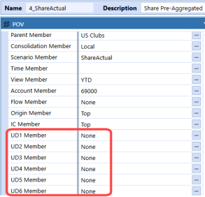
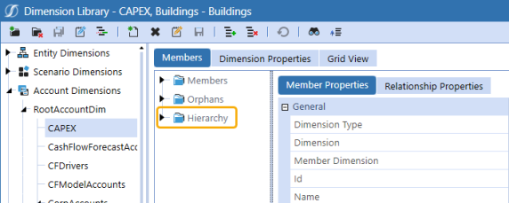
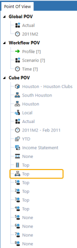
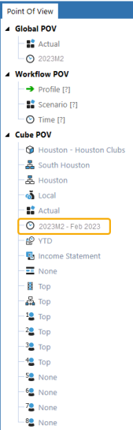
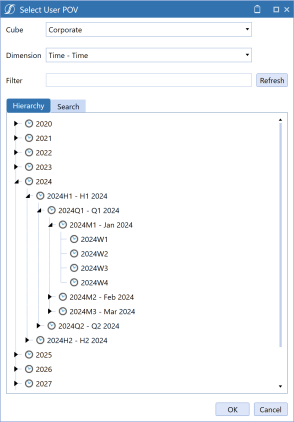
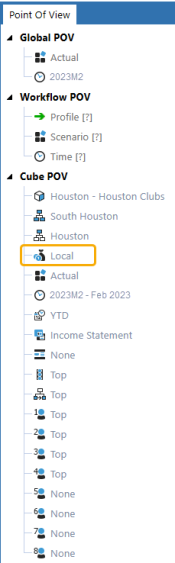
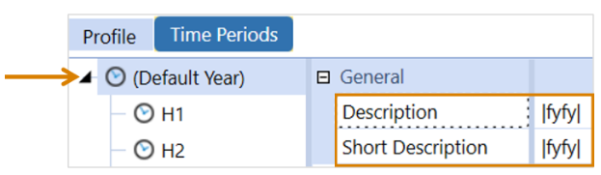
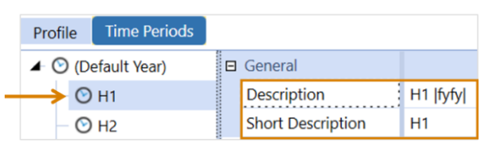
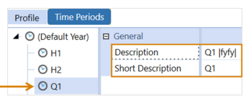
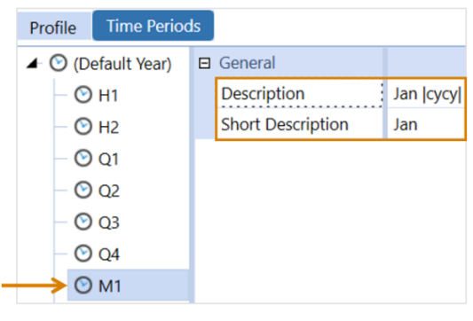

Cubes are organization structures that contain data. They control how data is stored, calculated, translated, and consolidated based on dimensions assigned to the cube. While flexible and designed to hold multiple types of data, they are generally designed for specific purposes. An application can have several Cubes that share dimensions, time profiles, business rule functions, and data. In this section, you will learn about cube dimension data, time profiles, and other cube-specific characteristics.
Cube
A dimension is like a folder used to organize business data in OneStream. It contains members that represent different types of data. For example, the Entity dimension contains members that represent the business units of an organization, and the account dimension members represent the account structure of an organization.
There are configurable and system-defined dimension types. Configurable dimension types are editable, and system-defined dimension types are not editable.
Configurable dimension types include entity, scenario, account, flow, user defined, parent, intercompany, time, and consolidation. See Configurable Dimensions.
System-defined dimension types include origin and view. See System-defined Dimensions.
The following dimension tokens are used to refer to dimension types in OneStream.
| Dimension Token | Dimension Type |
|---|---|
| E# | Entity |
| S# | Scenario |
| A# | Account |
| F# | Flow |
| U1# | User defined 1 |
| U2# | User defined 2 |
| U3# | User defined 3 |
| U4# | User defined 4 |
| U5# | User defined 5 |
| U6# | User defined 6 |
| U7# | User defined 7 |
| U8# | User defined 8 |
| P# | Parent |
| I# | Intercompany |
| T# | Time |
| C# | Consolidation |
| O# | Origin |
| V# | View |
Cube › Dimensions Overview
Configurable dimension types include entity, scenario, account, flow, user defined, parent, intercompany, time, and consolidation.
-
Entity, scenario, account, flow, and user defined dimensions are created, maintained, and edited in the Dimension Library.
-
Parent and intercompany dimensions are derived based on the entity dimension and its properties.
-
Before an application is created, the time dimension can be customized in System > Time Dimensions and Application > Time Profiles. After an application is created, the time dimension cannot be edited, but it can be viewed using the point of view (POV) pane.
-
The consolidation dimension has currencies that are added to Application Properties. The consolidation dimension is not editable in the Dimension Library, but it can be viewed using the POV pane.
Dimension Library Navigation
The Dimension Library enables all the customizable dimensions to be defined for your business needs. Dimensions can be shared across multiple cubes. Defining dimensions is important for sharing between cubes.
The entity, scenario, account, flow, and user defined dimensions are created and maintained in the Dimension Library in Application > Cube > Dimensions.

The following icons are in the Dimension Library toolbar.
-
 Create Dimension: Creates a new dimension.
Create Dimension: Creates a new dimension. -
 Delete Selected Dimension: Deletes a dimension after its members are deleted.
Delete Selected Dimension: Deletes a dimension after its members are deleted. -
 Save Dimension: Saves changes to the dimension properties.
Save Dimension: Saves changes to the dimension properties. -
 Rename Dimension: Renames a dimension.
Rename Dimension: Renames a dimension.NOTE: If you rename a dimension, you need to update objects that reference that dimension. For example, cube, data sources, transformation rules.
-
 Move Dimension: Moves a dimension. You can move a dimension one level above a parent or below a sibling.
Move Dimension: Moves a dimension. You can move a dimension one level above a parent or below a sibling.NOTE: This action is not supported for entity dimensions, but can be used for account, scenario, flow, and user defined dimensions.
-
 Create Member: Creates a new member for the selected dimension.
Create Member: Creates a new member for the selected dimension.NOTE: The maximum member name length is 500 characters.
-
 Delete Selected Member: Deletes a selected member that has no data stored.
Delete Selected Member: Deletes a selected member that has no data stored. -
 Rename Selected Member: Renames a selected member in the Dimension Library only.
Rename Selected Member: Renames a selected member in the Dimension Library only.NOTE: It does not rename the member in other areas.
-
 Save Member: Saves changes to the member properties.
Save Member: Saves changes to the member properties. -
 Add Relationship for Selected Member: Moves a member to another hierarchy or places it in more than one hierarchy.
Add Relationship for Selected Member: Moves a member to another hierarchy or places it in more than one hierarchy. -
 Remove Selected Relationship Without Deleting Member: Removes a member from a hierarchy without deleting the selected member. This can also be done by right-clicking on a dimension member.
Remove Selected Relationship Without Deleting Member: Removes a member from a hierarchy without deleting the selected member. This can also be done by right-clicking on a dimension member. -
 Cancel All Changes Since Last Save: Cancels changes made to the member and dimension properties since the last save.
Cancel All Changes Since Last Save: Cancels changes made to the member and dimension properties since the last save. -
 Search Hierarchy: Searches for a member within a dimension member hierarchy. This search will also produce every hierarchy in which a member appears. Search using Name and Description; Formulas; Name; or Description.
Search Hierarchy: Searches for a member within a dimension member hierarchy. This search will also produce every hierarchy in which a member appears. Search using Name and Description; Formulas; Name; or Description.
-
 Collapse Hierarchy: Collapses a member hierarchy within a dimension.
Collapse Hierarchy: Collapses a member hierarchy within a dimension.
The following icon displays in all dimension security properties.
-
 Navigate to Security: Navigates to the Security page. Use this icon to make changes to security users or groups before assigning them to specific dimensions.
Navigate to Security: Navigates to the Security page. Use this icon to make changes to security users or groups before assigning them to specific dimensions.
Members Tab
To view the Members tab, go to Application > Cube > Dimensions and select a dimension member. Then, click the Members tab.
In the Members tab, dimensions can be viewed by members, orphans, or in a hierarchy.

-
Members: All members within the selected dimension, including orphans.
-
Orphans: Members not assigned to a dimension hierarchy.
-
Hierarchy: Members in the chosen dimension in their hierarchy.
Every dimension hierarchy has a None member. The None member is used when no selection for the dimension is needed or applicable.
Example: The None member is referenced in the POV pane if the dimension is not needed in the analysis or data load.

Member Properties and Relationship Properties Tabs
Dimensions contain members that can be inherited and extended through Extensible Dimensionality. Use the Add Relationship for Selected Member icon to move a member to another hierarchy or place it in more than one hierarchy.
Dimension members have Member Properties and Relationship Properties tabs. The properties on these tabs vary by dimension type. Depending on the field, you can edit the properties using the following methods:
-
Typing directly in the field
-
Clicking the ellipsis to open a dialog box
-
Clicking the Navigate to Security icon in the Security section
-
Double-clicking in a field to generate a drop-down menu
Member Properties Tab
Member Properties are settings specific to the individual member. These properties apply to the member regardless of its relationship to a particular parent member in the hierarchy. If a member is part of multiple hierarchies, updates to the Member Properties apply to the member as it displays in all hierarchies regardless of which relationship is selected when the Member Properties are updated.
Member Properties are grouped into categories (for example, General, Descriptions, and Security). Various property fields are included in each category. Both the categories and their property fields vary across the dimension types. The plus and minus icons next to each category can be used to expand or collapse it.
To view the Member Properties tab, go to Application > Cube > Dimensions and select a dimension member. Click the Members tab and then the Member Properties tab. For example, this image shows the entity dimension.

These properties are standard across the entity, scenario, account, flow, and user defined dimensions:
General
-
Dimension Type: Indicates which dimension is being used.
-
Dimension: Indicates the dimension name.
-
Member Dimension: The dimension to which it is a member.
-
Id: A numerical identity that is automatically assigned by the application when the member is created. This number cannot be changed, even if the member name is changed.
-
Name: The name of the member in the dimension.
The following properties only displays for a Dynamic Dimension:
-
External Member Id: A numerical identity for the external member.
-
External Member Name: The name of the external member in the dynamic dimension.
Descriptions
Default Description: A description of the member in the dimension. See Report Alias.
If the Application Server Configuration File has been updated to include additional cultures, other language description fields may display under the Default Description field.
Relationship Properties Tab
Relationship Properties are settings associated with the relationship between members in the hierarchy. Relationship Properties can vary by each parent-child relationship, so different behaviors can occur based on the selected relationship.
To view the Relationship Properties tab, go to Application > Cube > Dimensions and select a dimension member. Click the Members tab and then the Relationship Properties tab. For example, this image shows the entity dimension.

These properties are standard across the entity, scenario, account, flow, and user defined dimensions:
General
-
Dimension Type: Indicates which dimension is being used.
-
Dimension: Indicates the dimension name.
-
Parent Member Dimension: Displays the name of the parent member. This may be blank if it is at the root level.
-
Member Dimension: Displays the name of the member.
-
Parent Member Name: Displays the direct parent to the member. This may display Root if it is the first branch.
-
Member Name: Displays the name of the member as it was defined.
Position Within Parent
When a new member is created, it is added to the bottom of the list of its siblings.
-
Position: Use this field to change the current level of the member in the hierarchy in relation to its siblings. This setting cannot move a member out of the current hierarchy.
-
Sibling Member: Displays a list of all the siblings in the current hierarchy available to move based on the setting in the Position field.
Dimension Properties Tab
To view the Dimension Properties tab, go to Application > Cube > Dimensions and select a dimension member. Then click the Dimension Properties tab.

These properties are standard across the entity, scenario, account, flow, and user defined dimensions:
-
Dimension Type: Indicates the current dimension type.
-
Id: A numerical identity that is automatically assigned by the application when the dimension is created. This number cannot be changed, even if the dimension name is changed.
-
Name: Indicates the current name of the dimension.
-
Description: Indicates the current description of the dimension.
-
Access Group: Displays the security group that has access to the dimension.
-
Maintenance Group: Displays the security group that has access and can make changes to the dimension.
-
Source Type: The approach used to specify members for this dimension. For example, members and relationships for a Standard dimension are created manually using the Dimension Library Editor or by using XML load. Members and relationships for a Dynamic dimension can be sourced from external data using a custom implementation in a Workspace Assembly
-
Standard: Normal metadata member must match a cube.
-
Business Rule: Connects to a business rule so that a set of members does not have to match a cube.
-
Dynamic Dimensions: Sources members and relationships for a Dynamic Dimensions to cache metadata from an external source into OneStream using Workspace Assemblies.
-
XBRL: Connects to an XBRL (extensible business reporting language) taxonomy. XBRL is a language for the electronic communication of business and financial data worldwide.
-
-
Source Path: If the Source Type is Business Rule or XBRL, enter the business rule name or the full file system path for the XBRL taxonomy link definition file. For example, Internal/XBRL/Taxonomies/EntryPoints/. You can also enter a Workspace Assembly Service to run for a Dynamic Dimension. For example, Workspace.DynamicDimensionsWS.WS.
-
Name Value Pairs: If the Source Type is Business Rule or XBRL, enter a comma-separated list of name-value pairs.
Grid View Tab
Select the Grid View tab to view a complete list of members from a selected dimension. You can view and edit properties of multiple members in the same screen without navigating to one member at a time. The following icons are in the Grid View toolbar:
-
 Member Filter: Narrows the list to view specific members. See Member Filter Builder.
Member Filter: Narrows the list to view specific members. See Member Filter Builder. -
 Grid Settings: Changes the data displayed.
Grid Settings: Changes the data displayed. -
 Save: Saves changes.
Save: Saves changes. -
 Refresh: Updates the data.
Refresh: Updates the data.
To change the metadata settings of multiple members in this view, double-click a data cell.

Grid Settings
Members displayed can change based on cube type, scenario type, and the time member chosen. Grid Columns to Display lists all the member properties available. Select the ones to display and edit in the grid.

-
Click Grid Settings to change the data displayed.
-
In Grid Settings:
- Select Cube Type to view members in a specific cube.
- Select Scenario Type to view members from a certain scenario type.
- Select Time to view members using a specific time member. Settings can be turned on or off, and the formulas will change to look at a specific time frame.
- Select Show Derived Values for Varying Properties Not Stored Values to display metadata that varies by scenario and time.
-
In Grid Columns to Display, select the member properties to view and edit in the grid.
Build a Dimension
To create a new dimension:
-
In the Dimension Library, select a dimension type.
-
Click the Create Dimension icon.
-
Enter a name.
-
Click the OK button.
Create a Member
To create a new member in the dimension:
-
Select the dimension.
-
Click the Create Member icon.
-
In the Member Properties tab, enter a name and default description. Add and update any additional properties as needed.
-
In the Relationship Properties tab, add and update as needed.
-
Click the Save Member icon.
Clone a Member
To create a new member using the same settings as the selected member.
-
In the Members tab, select a member and then right-click.
-
Hover over Clone Member to display the menu of options.
-
Select the option to clone the new member as: As First Child, As Last Child, As Previous Sibling, or As Next Sibling.
NOTE: Formula types and formulas do not copy to the new member.
-
In the Member Properties tab, enter a name and default description. Add and update any additional properties as needed.
-
In the Relationship Properties tab, add and update as needed.
-
Click the Save Member icon.
Change the Position of a Member
This option alters the position of a member in the hierarchy in relation to a sibling.
-
In the Members tab, select a member.
-
Click the Relationships Properties tab.
-
Click the Position drop-down menu.
-
Select the new position for the member: Retain Current Position, Before Sibling Member, After Sibling Member, First Sibling, or Last Sibling.
-
Click the Sibling Member drop-down menu.
-
Select the sibling member.
-
Click the Save Member icon.
Expand All Descendants
This option expands all the descendants for the selected member.
-
In the Members tab, select a member that has children and then right-click.
-
Click Expand All Descendants.
Copy and Paste Relationships
This option adds or moves copied members to a new hierarchy.
-
In the Members tab, select a member and then right-click.
TIP: Press Ctrl + click to select multiple items.
-
Click Copy Selected Members.
-
Right-click the name of another member.
-
Select the paste option:
-
Click Paste Relationships (Add) to create a new relationship for the copied members.
-
Click Paste Relationships (Move) to remove members from their current relationship and move them to a new one.
-
-
Select the location to paste the copied member: As First Child, As Last Child, As Previous Sibling, or As Next Sibling.
Add Relationship for Selected Member
This creates a relationship between two members.
-
In the Members tab, select a member.
-
Click the Add Relationship For Selected Member icon.
-
Click the ellipsis next to Child Member to select the child member.
-
Click the OK button.
Remove Relationships
This option removes members from their current relationship without moving them to a new one. If the member is no longer part of the dimension structure, it will be placed under Orphans. This option will not delete the member.
-
In the Members tab, select a member.
-
Click the Remove Relationships icon.
NOTE: You can also select a member and then right-click to see an option for Remove Relationships.
Delete a Member
This option deletes the selected member from the Dimension Library. A member can only be deleted if it does not have data stored.
-
In the Members tab, select a member.
-
Click the Delete Selected Member icon.
TIP: You can also select a member and then right-click to see an option for Delete Member.
Dimension Member Names
Use the following guidelines when creating dimension member names:
-
Names must be unique within a dimension type.
Example: There can be only one account named GrossIncome across all account dimensions.
-
Names have a 500 character limit.
-
Use underscores in place of spaces and periods. Square brackets do not need to be used if a member name has an underscore.
-
Spaces are allowed but not recommended.
-
If a member name includes a space or a period, square brackets must be used if the member is queried.
Example: E#[Quebec.City]
Restricted Characters
Restricted characters should not be used in dimension member names:
|
Character |
Name and Description |
|---|---|
|
& |
Ampersand NOTE: The ampersand character can be used in member names, but it may affect platform functionality. So, it is recommended to not use it. |
|
* |
Asterisk |
|
@ |
At sign |
|
\ |
Back slash |
|
{ } |
Brace (left and right) |
|
[ ] |
Bracket (left and right) |
|
^ |
Caret |
|
, |
Comma |
|
= |
Equal sign |
|
! |
Exclamation point |
|
> |
Greater than sign |
|
< |
Less than sign |
|
- |
Minus sign |
|
# |
Number sign |
|
% |
Percent NOTE: The percent character can be used in member names, but it may affect platform functionality. So, it is recommended to not use it. |
|
| |
Pipe or vertical bar |
|
+ |
Plus sign |
|
? |
Question mark |
|
" |
Quotation marks |
|
; |
Semicolon |
|
/ |
Slash |
Reserved Words
Reserved words cannot be used in dimensions or other structural application components, such as cubes.
-
Account
-
All
-
Cons
-
Consolidation
-
Default
-
DimType
-
Entity
-
EntityDefault
-
Flow Origin
-
IC
-
None
-
Parent
-
POV
-
Root
-
RootAccountDim
-
RootEntityDim
-
RootFlowDim
-
RootScenarioDim
-
RootUD1Dim
-
RootUD2Dim
-
RootUD3Dim
-
RootUD4Dim
-
RootUD5Dim
-
RootUD6Dim
-
RootUD7Dim
-
RootUD8Dim
-
Scenario
-
Time
-
UD1 – UD8
-
UD1Default
-
Unknown
-
View
-
WF
-
Workflow
-
XFCommon
Cube › Dimensions Overview › Configurable Dimensions
The entity dimension represents the business unit structure of an organization. In a multi-cube application in which each cube contains different entities, the cubes can be used to link the different entity structures.

Member Properties Tab
To view the Member Properties tab, go to Application > Cube > Dimensions > Entity Dimensions and select an entity member. Click the Members tab and then the Member Properties tab.
See the following category descriptions:
-
NOTE: These properties are standard across the entity, scenario, account, flow, and user defined dimensions.
-
NOTE: These properties are standard across the entity, scenario, account, flow, and user defined dimensions.
Security
Display Member Group: This group can see that this entity exists within a list of entities.
Read Data Group: This group can see data from this entity.
Read Data Group 2: This is a second group that can see data from this entity. It is used for additional security details.
Read and Write Data Group: This group can view and edit data from this entity.
Read and Write Data Group 2: This is a second group that can view and edit data from this entity. It is used for additional security details.
TIP: Click the ellipsis button and begin typing the name of the Security Group in the blank field. As the first few letters are typed, the groups are filtered making it easier to find and select the desired group. Once the group is selected, press Ctrl + double-click to enter the correct name in the field.
Use Cube Data Access Security
-
True: Cube Data Access Security will be applied from the cube level down to this entity.
-
False: Cube Data Access Security will not be applied.
Cube Data Cell Access Categories, Cube Conditional Input Categories, and Cube Data Management Access Categories: Category is used to specify an optional name for a group of Cube Data Access Items. Multiple items can use the same category name. These settings are used when the data cell security for an entity should only use a subset of the cube data access items. Enter a comma-separated list of category names.
If these settings are left blank, all categories will be used in the corresponding settings in the Data Access tab in Application > Cube > Cubes > Data Access. See Data Access.

Settings
Currency: The local currency of the entity.
Is Consolidated
-
True: The data from the children of this entity are consolidated, which results in the entity equaling the total of its children.
-
False: The data will not be consolidated. The use case to set the Is Consolidated property to False is to use the parent entity strictly for grouping purposes. Also, it can help with consolidation performance times, because the consolidation will not be performed at the parent entity.
Is IC Entity
-
True: Makes the entity visible in the intercompany dimension and allows that entity to post intercompany transactions to intercompany accounts.
-
False: This will not be an intercompany entity.
Vary By Cube Type
Each cube type can use different settings, because dimensions can belong to multiple cubes.
Constraints are properties used on given members to stop them from interacting with other members of another dimension type.
Flow Constraint: This is the flow dimension constraint. This entity can only use the members with this child or members under a selected parent member.
IC Constraint: This is the intercompany dimension constraint. This entity can only use the members with this child or members under a selected parent member. Setting entity constraints will define the data intersection as green, no input cells.
IC Member Filter: This is an additional way to limit intercompany partners of a particular entity. Use the IC Member Filter to make a list of partners. The entity can only have intercompany transactions with this list of partners. Conversely, only this list of partners can have a transaction with the entity. This provides additional protection to the intercompany transaction.
UD1 Constraint through UD8 Constraint: This is the user defined constraint. This entity can only use the members with this child or members under a selected parent member.
UD1 Default through UD8 Default: A default membership for this entity can be defined to a user defined dimension, such as a cost center.
Example: This entity falls in the Europe Services region and every import, form edit, and journal entry should classify this entity as being associated with the CC_110 - Sales cost center. The entity never has to explicitly map to the cost center. When data is loaded, it is directed to the EntityDefault member and the user defined setting will be applied automatically. This can have a negative impact on the consolidation if not used in a user defined dimension with a limited number of members.

Vary By Scenario Type
Sibling Consolidation Pass: This is typically used for holding companies related to Equity Pickup calculations. Specify Pass 2 or greater if calculated data for this entity is based on calculated data from other sibling entities during a consolidation. It allows this entity to be consolidated and calculated after other sibling entities have been consolidated and calculated. The default behavior for all entities is either Pass 1 or (Use Default). Both settings do the same thing, effectively causing all sibling entities to be consolidated (if they have child entities) and calculated at the same time or in an indeterminate order.
Sibling Repeat Calculation Pass: This is typically used for circular ownership related to Equity Pickup calculations. Specify Pass 1 or greater to repeat the calculation of the local consolidation member of this entity. Repeat calculation passes occur after all sibling entities have been consolidated and calculated. Repeat calculations are used when calculated data for two entities rely on the calculated data of each other. The default behavior for all entities is (Use Default), which will not use a repeat calculation.
Auto Translation Currencies: This is typically used for an Equity Pickup calculation when an entity needs to be translated to a sibling holding the local currency of a company during a consolidation. Enter a comma-separated list of currencies. The default behavior is to translate only to the local currency of the parent entity during a consolidation.
See Equity Pickup.
Vary By Scenario Type and Time
Entities can have different attributes based on scenario and time. Default settings are applied from the first time period in the application until there is a change, and some settings vary by scenario type. The time display for any time varying properties uses the standard time dimension profile.
In Use
-
True: The entity is in use.
-
False: This can turn off the ability to use an entity based on time. This keeps historical data available. This is designed to be used when an entity becomes inactive or is sold. Once an entity is no longer in use, it will be ignored during consolidation and all intersections including this entity will be not valid.
Allow Adjustments: This setting can be applied as True or False, or it can vary by scenario type or time.
-
True (default): The Journals Module is enabled for the entity to enter adjustments to the AdjInput Origin member.
-
False: The Journals Module is not enabled for the entity. However, when False, adjustment to the AdjInput Origin member is still allowed on accounts having the Account Adjustment Type of Data Entry, which is used in designs where adjustments are performed using form data entry rather than the Journals Module. To prevent input to AdjInput on accounts set as Data Entry Adjustment Type, NoInput Rules, or Data Cell Conditional, security can be used.
Allow Adjustments From Children: This setting can be applied as True or False as a default, or it can vary by scenario type or time. This setting is applied on parent-level entities to allow the direct child entities to post journal adjustments using the consolidation dimension members OwnerPostAdj and OwnerPreAdj. If set to True (default), adjustments from the direct child entities to OwnerPostAdj and OwnerPreAdj are allowed.
Text 1 through Text 8: This is open for custom attributes used for multiple purposes, such as business rules, member filters, or transformation rules. The value can be changed as the business changes or by scenario type.
Relationship Properties Tab
To view the Relationship Properties tab, go to Application > Cube > Dimensions > Entity Dimensions and select an entity member. Click the Members tab and then the Relationship Properties tab.
See the following category descriptions:
-
NOTE: These properties are standard across the entity, scenario, account, flow, and user defined dimensions.
-
NOTE: These properties are standard across the entity, scenario, account, flow, and user defined dimensions.
Default Parent
Parent Sort Order: Setting to determine a default parent when evaluating member lists, for example, in cube views. If a parent is not explicitly specified, the parent with the lowest sort order is used.
Vary By Scenario Type and Time
Percent Consolidation: Defines the percentage of the entity to be consolidated.
Example: A value of 100 means that 100% of the data will be consolidated to the parent. A value of 50 means that 50% of the value will be consolidated to the parent.
Percent Ownership: Ownership setting that can be used by business rules. By itself, the setting has no effect on the consolidation.
Ownership Type: Ownership setting that can be used by business rules. By itself, the setting has no effect on the consolidation.
-
Full Consolidation: Normal setting for entities that fully consolidate into a parent.
-
Holding: Designates the parent and child relationship as a holding company situation.
-
Equity: Used to help business rules determine the value to increase the equity method of accounting for an investment.
-
Non-Controlling Interest: Used for business rules to determine the minority interest portion of an entity into the consolidation.
-
Custom: Open for custom use in business rules.
Text 1 through Text 8: Use to define custom attributes to modify aspects of business rules, member filters, or transformation rules capabilities. These custom attributes act as variable placeholders activated at runtime to customize views of data or ways to interact with data. You can change these values by scenario type or for evolving business needs.
Cube › Dimensions Overview › Configurable Dimensions
The scenario dimension includes members representing a set of data that differs by business use, such as actual, budget, and forecast.
Scenario Types
Members are assigned a scenario type and each cube offers the following preset scenario types:
|
|
|
|
|
|
|
|
|
|
|
|
|
|
|
|
|
|
|
Scenario types are predefined scenario categories used in conjunction with varying member properties, data sources, transformation rules and workflow profiles. Different versions for each of the preset types can be created depending on which scenario type is assigned to the current scenario being processed. Scenario types provide you flexibility since each type contains an unlimited number of scenarios. You can assign dimensions to cubes, differing them by scenario type.
Scenarios can be organized as a hierarchy, but do not consolidate.
Names of scenario types are irrelevant since none of the default behaviors of the OneStream Platform are defined by scenario types. This enables you to choose any scenario type, assign it to any scenario, and choose a relevant name applicable to the business problem you're solving.
NOTE: The name and number of the scenario types cannot be changed. Multiple scenarios can share the same scenario type. When shared, all the features will work the same way across all scenarios sharing the same scenario type.
Member Properties Tab
To view the Member Properties tab, go to Application > Cube > Dimensions > Scenario Dimensions and select a scenario member. Click the Members tab and then the Member Properties tab.
See the following category descriptions:
-
NOTE: These properties are standard across the entity, scenario, account, flow, and user defined dimensions.
-
NOTE: These properties are standard across the entity, scenario, account, flow, and user defined dimensions.
Security
Use Security settings to control the level of access organization members have to a scenario.

Click the ellipsis to select the level of access for each group.
-
Read Data Group: Controls who can view data.
-
Read and Write Data Group: Determines who can view and modify data.
-
Calculate from Grids Group: Sets who can calculate, translate, and consolidate data from a cube view or form.
-
Manage Data Group: Determines who can run data management tasks. Membership in this group is required to run steps, such as custom calculate or reset scenario. This prevents unauthorized users from launching steps that could alter or clear data unintentionally.
Workflow
Use Workflow settings to control the type of periods displayed to users when they load data.

Use in Workflow: Determines whether a scenario is viewable from the workflow in OnePlace.
-
Set to False to make the scenario unavailable.
-
Set to True to make the scenario available to users setting the workflow point of view.
NOTE: Data can still be entered with forms and the Excel Add-In to a hidden scenario.
Workflow Tracking Frequency: Determines how time displays in the workflow and is based on the type of data being entered for the scenario. See Input Frequency.
NOTE: Workflow Tracking Frequency settings cannot be changed if any steps in the workflow have been processed for the scenario.
-
Choose from the following options:
-
All Time Periods (standard setting): To display all periods in the year. A period could be months or weeks depending on the application.
-
Monthly: To set the workflow periods to monthly, which could be 12 to 16 months depending on the application.
-
Quarterly: To set the workflow periods to four periods, such as Q1, Q2, Q3, Q4.
-
Half Yearly: To set the workflow periods to two periods, such as H1, H2.
-
Yearly: To set the workflow periods to one period, such as 2023.
-
Range: To define a custom range that is displayed as a one-time period including the start and end time, such as 2023M12-2024M11. As data loads, each period displays this range.
-
Workflow Time, Workflow Start Time, and Workflow End Time become selectable when Range is chosen. Click the ellipsis to choose a time for each. Year or year and month can be defined.
-
-
Number of No Input Periods Per Workflow Unit: Determines the number of periods to be no input and disables input from the Import, Form, and Adjustment Origin Members for the specified periods. To set the number of no input periods, type a number in the cell.
Example: If the first three months of data is automatically copied from Actual to Forecast with a user inputting the remaining nine months, enter 3 to make those first three periods read only and prevent data entry.
Settings

Scenario Type: Groups similar scenario types to share settings or Business Rules. A scenario type can contain many scenarios.
Input Frequency (Vary By Year): Sets the data frequency to Monthly, Quarterly, Half Yearly, or Yearly, for the scenario.
-
Click the ellipsis to vary the input frequency by year.
-
In the Varying Member Property window, from the pane on the left, choose the year.

-
In the Stored Value field, select the frequency.
-
Click the OK button.
NOTE: If Quarterly or Yearly is used, data is not saved at a base (monthly/weekly) level as this would display invalid cells.
The Input Frequency property works with the Workflow Tracking Frequency property. See Workflow. If the Input Frequency varies by year, the Workflow Tracking Frequency updates the workflow view accordingly. See examples below:
Example 1
If in 2023 the Input Frequency is Monthly and the Workflow Tracking Frequency is All Time Periods, the workflow displays the following:

Example 2
If in 2024 the Input Frequency is Weekly, and the Workflow Tracking Frequency is All Time Periods, the workflow displays the following:

Use Input Frequency Data in Lower Frequencies: Used to display data from the scenario's input frequency when processing a lower level invalid frequency.
Example: In a quarterly scenario, display the amount from Q1 in M1, M2, M3 and in all weeks below these 3 months. In a yearly scenario, display the single yearly amount in all time periods in the year.
-
Set to True to enable.
-
Set to False to disable.
Default View: Used to set the standard view, either Periodic or YTD, for calculations, member formulas, and clearing calculated data.
Retain Next Period Data Using Default View: Determines whether a future period's data value remains the same or is updated based on the prior period's input value. The scenario's Default View is either Periodic or YTD.
-
Set to True if a flow account has a data value in a future period that will change if the data is altered in a prior period.
-
Set to False if a flow account has a data value in a future period that will be retained if a data value in a prior period is being changed.
Example: If set to true, February periodic and YTD data will need to change to be consistent with a new January entry. If false, when a new periodic or YTD data value is entered for January, February's data value is retained.
Input View For Adjustments: Determines the standard view on how data is entered using a journal. This typically matches the Default View, either periodic or YTD.
NOTE: Regardless of the setting, all journals, except auto-reversing, must be entered monthly.
Use Input View for Adj in Calculations: This property forces calculations to use the Input View For Adjustments view even if the calculation attempts to override the default view.
-
Set to True to use the Input View for Adjustments view regardless of the default Scenario View or the view specified in the calculation.
-
Set to False to use the default Scenario View when the view is not specified in the calculation.
No Data Zero View For Adjustments: Determines the view when there is no data in journals for the period. Can be set to periodic or YTD and typically the setting is the same as the Input View for Adjustments.
No Data Zero View For NonAdjustments: This is tied to the data load and is used when there is not data for the period. The current selections are YTD and Periodic.
Consolidation View: This property determines the standard view of the consolidation and can be set to periodic or YTD.
-
Set to Periodic if work is completed by period. However, all numbers are stored as YTD. Set to Periodic for Org by Period implementations.
-
Select YTD to enhance consolidation performance. This property can be changed and will update for the next consolidation.
Formula: Provides the ability to use a formula to run copying between scenarios prior to the consolidation of a Scenario. See Formula Guide in About the Financial Model for more details.

Formula for Calculation Drill Down: Enables drill down on members with attached formulas. A specific formula is required for drill down to display the original formula and the members that activate the drill down to the original values. Drill down on calculated data cells and data cells copied by a Copy Data Management Sequence. See Formulas for Calculation Drill Down in About the Financial Model for more information.
Clear Calculated Data During Calc: Determines whether existing data is cleared during the calculation process.
-
Set to True (default), to clear data during the calculation process.
-
Set to False to clear data manually.
FX Rates
Use FX rates to determine the exchange rate settings for the selected scenario member.

Use Cube FX Settings: Determines whether the scenario member uses the cube's default rate type.
-
Set to True to use current cube's default rate type.
-
Set to False to use custom rate calculations.
If False is selected, Rate and Rule Type for Revenues And Expenses, Rate and Rule Type for Assets And Liabilities, and Constant Year For FX Rates become accessible.
-
Rate Type for Revenue And Expenses / Rate Type For Assets And Liabilities:
-
Choose AverageRate to use the average currency rate of a period from the first day to the last day of the month.
-
Choose OpeningRate to use the currency rate at the beginning of the period.
-
Choose ClosingRate to use the currency rate at the end of a period.
-
Choose HistoricalRate to use the opening currency rate from a particular historical date.
-
-
Rule Type For Revenue And Expenses / Rule Type For Assets And Liabilitiesselections:
-
Set to Direct to multiply each value by the translation rate.
-
Set to Periodic to weight the calculation based on a period.
-
-
Constant Year for FX Rates: Use the drop-down to set the rates based a specific year.
Hybrid Scenarios
Hybrid scenarios allow for data to be copied or shared between scenarios for defined period and specific members.

For information about how the following properties impact hybrid scenario queries and using hybrid scenarios, see Working With Hybrid Scenarios
Data Binding Type: Indicates the type of data binding that should occur for the target scenario. Choose one of the following options:
-
Share Data from Source Scenarioto share a read-only cube data set from the source Scenario to the target Scenario.
-
Copy Input Data from Source Scenarioto copy base level cube data from a source Scenario to the target Scenario.
-
Copy Input Data from Business Rule to copy base level cube data based on a Finance business rule.
Source Scenario or Business Rule: Indicates source location. Set to either the source scenario member or business rule.
End Year: Property controlling time.
Select a year if the data query must end after a specific year or leave the field empty to query all years.
Example: If it should not occur in 2021, the End Year is set to 2020 to exclude all future years from the query.
NOTE: The database stores data records by year, each year having its own data table and containing the data records for each period. When data is queried using a Hybrid Scenario, it occurs at the database level, and only returns the periods containing data.
Member Filters: Determines which data is included in query results.
-
Use a comma separated list to include only members in the lists. This can include multiple dimension types, member expansions, or single members.
-
Leave the field blank to include all source data in query results.
Member Filters to Exclude: Determines which data is excluded in query results.
-
Use a comma separated list to exclude members in the lists. This can include multiple dimension types, member expansions or single members. If it includes members from the Member Filters property, those members are excluded.
-
Leave the field blank to exclude no data.
NOTE: You cannot use Data Unit dimensions in the Member Filters or Member Filters to Exclude properties (Entity, Time, Consolidation, Scenario).
Pre-aggregated Members: Determines whether to share or copy data from a parent member, source, to a base member, target.
Example: If you query the Top member of a large dimension such as a UD, the aggregated total is calculated on-the-fly each time.
Set the top member to a Base member to pre-aggregate if the detail of a dimension is not needed. This alleviates repetitive calculations for the same number. For example:
UD1#Top=UD1#None,UD2#Top=UD2#None,UD3#Top=UD3#None,UD5#Top=UD5#None,
UD5#Top=UD5#None, UD6#Top=UD6#None

NOTE: Ensure the base members shown above are included in the Member Filters property and the parents are included in the Member Filters to Exclude property.
Options: Optional and variable settings that provide additional control when running a hybrid share or copy.
When setting options, remember:
-
Options are name-value pairs.
-
Ensure the option names, definitions, and syntax are accurate and include any custom name-value pairs if a business rule is used to copy.
-
Create a comma separated list if you use multiple options.
Custom Settings
Custom Settings, Text1...Text 8, enable you to use custom attributes for business rules, member filters, or transformation rules. The value can be changed in the tag over time as the business changes, or by scenario type.

Relationship Properties Tab
To view the Relationship Properties tab, go to Application > Cube > Dimensions > Scenario Dimensions and select a scenario member. Click the Members tab and then the Relationship Properties tab.

See the following category descriptions:
- General
NOTE: These properties are standard across the entity, scenario, account, flow, and user defined dimensions.
-
NOTE: These properties are standard across the entity, scenario, account, flow, and user defined dimensions.
Cube › Dimensions Overview › Configurable Dimensions
The account dimension stores both financial and non-financial members.

Account members should be organized hierarchically so data entered for each account will aggregate from a child to a parent member based on account type.
Example: Members with an Account Type of Revenue aggregate as a positive number, and members with an Account Type of Expense aggregate as a negative number in the calculations.
Account hierarchies drive reports, such as income statements and balance sheets.
Member Properties Tab
To view the Member Properties tab, go to Application > Cube > Dimensions > Account Dimensions and select an account member. Click the Members tab and then the Member Properties tab.
See the following category descriptions:
-
NOTE: These properties are standard across the entity, scenario, account, flow, and user defined dimensions.
-
NOTE: These properties are standard across the entity, scenario, account, flow, and user defined dimensions.
Security
Controls who can view the selected account dimension member.

Display Member Group: Click the ellipsis to set which security group can see that the account member exists within a list of accounts.
Settings

Account Type: Determines how the accounts roll up to a parent. Choose from the following options:
-
Group: Setting used to make the account organizational-only and will not aggregate data.
-
Revenue: Setting used to tag income accounts with a revenue attribute.
-
Expense: Setting used to tag expense accounts with an expense attribute. The amount entered does not have to be negative because of this attribute.
-
Asset: Setting used to tag asset accounts.
-
Liability: Setting used to tag liability accounts. The amount entered does not have to be negative because of this attribute.
NOTE: Equity accounts should set Account Type equal to Liability because an equity account type does not exist in OneStream.
-
Flow: Setting to hold values that act like an income statement account and have a periodic and year-to-date value. This account does not translate.
-
Balance: Setting to hold values that act like a balance sheet account that are at a particular time. This account does not translate.
-
BalanceRecurring: Setting for a balance sheet account that does not change over time such as an opening balance. This account does not translate.
-
NonFinancial: Setting for informational accounts and not financial such as headcount or square footage. This type is used for legacy purposes such as upgrading from older systems. This account does not translate.
NOTE: NonFinancial and balance account types are both available for legacy purposes. However, a NonFinancial data cell is not impacted by the flow member’s Switch Type property setting. See Switch Type.
-
DynamicCalc: An account that calculates on the fly and does not need other formulas to run in order to calculate.
Example: Ratios that can be calculated as needed.
Formula Type: Determines the behavior related to the member's formula. Choose from the following options:
-
FormulaPass1…FormulaPass16: This setting controls which rules run, and in what order, to ensure the desired calculation result. Set to Formula Pass X to define when the calculation should run and whether it is dependent on a calculation from other formulas to derive its value. Formulas are included in the account metadata and can be shared between cubes.
-
DynamicCalc: Set to Dynamic Calc to calculate the member's value every time the cell needs to be displayed without storing the result.
-
DynamicCalcTextInput: Set to DynamicCalcTextInput to run the calculation dynamically and open the data cell for text annotations on a cube view.
For more details on using formulas, see Formulas.
Allow Input: Setting to determine whether data input is allowed.
-
Set to True (default) if:
-
Data input for the account member is allowed, or
-
Specific scenarios or entities need input. Then use the cube's Conditional Input Settings to control input.
-
-
Set to False to make the member read-only. Examples include:
-
When the account has a formula and you don't want the formula changed.
-
If the account member is a parent-level member. Setting the parent to false removes the member as a possible mapping target, which prevents data from erroneously being mapped to it.
-
Is Consolidated: Determines if the data for the member will consolidate to its parent.
-
Set to Conditional (True if no Formula Type (default)) to have accounts with a formula type specified included in the calculation and consolidation process. Determines which Accounts will be part of the consolidation. If the Account has a Formula Type, the Account Member will be calculated and consolidated only if the setting is True.
-
Set to True (regardless of Formula Type) to include the account in the calculation and consolidation process, irrespective of whether it has an associated Formula Type.
-
Set to Falseif the account should not be consolidated.
NOTE: Increase performance by setting Is Consolidated to False for each member that does not need to be consolidated.
Is IC Account: Determines if an account is an intercompany account.
-
Set to Conditional (True if Entity not same as IC) or True to have this account identified as an intercompany account and allow transactions to be processed based on the settings in the Vary by Cube Type section under IC Constraints and IC Member Filter.
NOTE: Conditional is a more common usage than True. Setting to Conditional will prevent an entity from recording IC with itself as the IC partner. If set to True, an Entity can record IC with itself as the partner.
-
Set to True to have this account identified as an intercompany account and allow transactions to be processed based on the settings in the constraint section under IC Constraints and IC Member Filter.
-
Set to False (default), to ensure the account will not be identified as an intercompany account.
Use Alternate Input Currency In Flow: Determines if alternate currency should be used.
-
Set to True to have the account use the historical currency override.
-
Set to False to ensure the account does not use an alternate currency.
Plug Account: Can be used to select an account as the Intercompany Plug Account to handle any non-eliminating transactions. To select an account:
-
Click the ellipses to open the Select Member dialog box.
-
Click the Dimension drop-down to select the dimension where the account is located.
-
Use the Hierarchy or Search tabs to select the account.
-
Click OK.
NOTE: Multiple accounts can be reclassified to the same plug account.
Input View for Adjustments / No Data Zero View For Adjustments / No Data ZeroView For NonAdjustments: These settings define how the account member will perform for adjustments and non-adjustments. For each setting:
-
The Scenario's Input View for No Data Zero View For Adjustments property setting dictates how the account will process as an adjustment.
-
The default is Use Scenario Setting (Default).
-
Periodic or YTD can be selected to override the Scenario's Input View for Adjustments and the No Data Zero View Settings.
Aggregation
Aggregation settings enable or disable aggregation for specific dimensions.

Click a cell to set each property to True or False. Set to True to allow aggregation of the account member in the specified dimension or False to turn off aggregation. Dimension members used for informational purposes are typically set to False.
-
Used On Entity Dimension
-
Used On Consolidation Dimension
-
Enable Flow Aggregation
-
Enable Origin Aggregation
-
Enable IC Aggregation
-
Enable UD1…UD8 Aggregation
Vary by Cube Type
Properties in the Vary by Cube Type category can be used to set constraints. Constraints dependent on specific dimensions can vary by cube type.
Constraints are used to restrict intersections to which data can be entered for a member and can be set on flow, intercompany, and user defined members.

For complete definitions of each property, see Entity Dimension.
Vary by Scenario Type
The Vary by Scenario Type property allows for the selected account member to be used with a Workflow Channel, for a specified scenario type.

Click the ellipsis to set the Workflow Channel to one of the following options:
-
Standard: A basic member that acts as the default Workflow Channel for account members and Workflow Profile Input Children.
-
NoDataLock: A special member that only applies to a metadata member (account or UDx) and should not participate in a workflow channel grouping scheme. This is the default value for any UDx Member.
If other Workflow Channels have been created, in addition to these two default channels, they will be available for selection.
Vary by Scenario Type and Time
Accounts can have different attributes based on the scenario type and time, such as associated formulas and the ability to define the method used for adjusting data. The time display for any time varying properties uses the Standard Time Dimension Profile. Text properties enable you to tag the selected account.

Click the ellipsis to customize the settings on each of the below properties:
In Use: Keeps historical data available while allowing the ability to close the account without using No Input rules.
-
Set to True (default) to have the account in use.
-
Set to False to turn off the ability to use an account based on time.
Formula: An individual formula kept with the account across cubes which can vary by time.
Example: For instance, if a calculation changes over time, but the historical interpretation of that formula needs to be saved. For more information, see the Formula Guide, in About the Financial Model.
Formula for Calculation Drill Down: Determines if drill down is allowed on members with attached formulas. A specific formula for drill down is required to display the original formula used and the members that activate the drill down back to the original values. To set the Formula and Formula for Calculation Drill Down:
-
Click the ellipsis button located in the Formula or Formula For Calculation Drill Down fields.

-
Click the ellipsis button in the Stored Value field in order to input a formula.

-
Type the individual formula in the Formula Editor dialog for the specific account.

-
Click the tick icon to check that the formula was compiled correctly.
-
Click OK.
TIP: Formulas can be stacked if a particular account intersection needs to have a special formula different from a normal process. Formulas are not limited to one per metadata member.
Adjustment Type: Limits the use of adjustments over time. To set this field:
-
Click the ellipsis to open the Varying Member Property - Adjustment Type dialog.
-
Click the Stored Value cell to generate a drop-down.
-
Choose from one of the following options:
-
Not Allowed: Adjustments are not allowed, at any time.
-
Journals: Adjustments are allowed for journal entries.
-
Data Entry: Adjustments are allowed when entering data manually.
-
Text 1…Text 8: Set custom attributes for use in business rules, member filters, or transformation rules. Change the value over time as business needs change or by scenario type. If multiple attributes are required in a single text field, separate with a comma.
Relationship Properties Tab
To view the Relationship Properties tab, go to Application > Cube > Dimensions > Account Dimensions and select an account member. Click the Members tab and then the Relationship Properties tab.

See the following category descriptions:
- General
NOTE: These properties are standard across the entity, scenario, account, flow, and user defined dimensions.
-
NOTE: These properties are standard across the entity, scenario, account, flow, and user defined dimensions.
Aggregation
Defines the proportion of data for the selected member which will aggregate to the parent.
Example: An aggregation weight of 0.50 means that 50% of the data stored against this member will aggregate to its parent.
Aggregation Weight: The Aggregation Weight setting is available in account, flow, and UD Dimensions. Weights on base entities can change based on its parent. Set the weight to 0 to ensure the member does not aggregate.
Example: If a Member is reused in a Dimension, but it does not need to sum up more than once, set the weight to 0.
Cube › Dimensions Overview › Configurable Dimensions
The flow dimension includes members that provide increased visibility into account movements and context on how an account changed from one period to the next.

Members of this dimension aggregate up, and hierarchies can be simple or complex.
| Simple Flow | Complex Flow |

|

|
Additional settings help with historical currency overrides and eliminate many common custom scripts in order to perform calculations.
Member Properties Tab
To view the Member Properties tab, go to Application > Cube > Dimensions > Flow Dimensions and select a flow member. Click the Members tab and then the Member Properties tab.
See the following category descriptions:
-
NOTE: These properties are standard across the entity, scenario, account, flow, and user defined dimensions.
-
NOTE: These properties are standard across the entity, scenario, account, flow, and user defined dimensions.
Security
Controls who can view the selected member and any of its children.

Display Member Group: Click the ellipsis to determine which group can see this dimension from the Application > Cube > Dimensions list.
Settings

See Account Dimension for Formula Type, Allow Input, and Is Consolidated fields.
Switch Sign: The flow member is linked to an Account through flow constraints.
-
Set to True to switch the sign of data for the flow member.
-
Set to False to keep the sign as is.
Switch Type: Switches the type of data based on the account attribute, for example setting an Asset to a Revenue. This is useful when treating roll forward accounts as income statement accounts in the balance sheet .
-
Set to True to switch the type.
-
Set to False to keep the type.
Flow Processing
Use these settings when defining an alternate input currency. The flow dimension can hold both values of a dollar override and the settings differ based on how this setting is used. To be used, the account member property field, Use Alternate Input Currency in Flow, must be set to True, except when you set the Flow Processing Type field to Is Alternate Input Currency for All Accounts. See Settings in Account Dimension.

Flow Processing Type: Click within the cell to generate a drop-down list with the following options:
-
Translate using Alternate Input Currency, Input Local: Overrides the translated value with the amount input at the local currency level. If selected, this setting activates the Source Member for Alternate Input Currency property where you can select the specific flow member to override the value for the current flow member.
-
Translate using Alternate Input Currency, Derive Local: Overrides the translated value and derives the local currency value based on the local currency rate. If selected, this setting activates Source Member for Alternate Input Currency. This setting should not be used in a trial balance unless accounting for the possible out of balance condition.
Alternate Input Currency: Lists available currencies that determine the source value override currency. This typically matches the default currency of the application.
Example: If a USD override is required, set the property to USD. If a EUR is override is required, set the property to EUR.
Source Member for Alternate Input Currency: Defines the specific flow member to override the value for the current flow member.
Vary by Scenario Type and Time
See Account Dimension.

Relationship Properties Tab
To view the Relationship Properties tab, go to Application > Cube > Dimensions > Flow Dimensions and select a flow member. Click the Members tab and then the Relationship Properties tab.
See the following category descriptions:
- General
NOTE: These properties are standard across the entity, scenario, account, flow, and user defined dimensions.
-
NOTE: These properties are standard across the entity, scenario, account, flow, and user defined dimensions.
Aggregation Weight
See Aggregation in Account Dimension.
Cube › Dimensions Overview › Configurable Dimensions
Take full advantage of Extensible Dimensionality for inheriting and extending across business units and scenario types with user defined dimensions. There are eight user defined dimensions, but not all eight need to be used. When determining the order in which to use them, it is recommended to define the larger or more significant dimensions first using UD1 or UD2. Stacking hierarchies in one user defined dimension does not affect calculation time, because performance is primarily based on the number of stored data cells rather than the number of possible intersections.

Each user defined dimension has an EntityDefault member that is used to assign attributes to an entity. This is set on the specific entity in the Vary By Cube Type settings for each user defined dimension. With this feature, an entity can have a specific default, which reduces the need to map every entity to a common tag, such as region or division, for data import and form-based data entry. You can select the EntityDefault member without knowing the specific entity setting for each of these user defined dimensions. However, using this setting impacts consolidation time, because more intersections will be in the financial model.

A UD1 through UD8 default membership can be defined to a user defined dimension, such as a cost center.
Example: This entity falls in the Europe Services region and every import, form edit, and journal entry should classify this entity as being associated with the CC_110 - Sales cost center. The entity never has to explicitly map to the cost center. When data is loaded, it is directed to the EntityDefault member and the user defined setting will be applied automatically. This can have a negative impact on the consolidation if not used in a user defined dimension with a limited number of members.

UD2 through UD8 also have a UD1Default member. UD1Default can be used for constraints and in transformation rules.

In the following example, the EntityDefault member was used in UD4 mappings and the same could be used for UD1Default.

Member Properties Tab
To view the Member Properties tab, go to Application > Cube > Dimensions and select a user defined dimension member. Click the Members tab and then the Member Properties tab.
See the following category descriptions:
-
NOTE: These properties are standard across the entity, scenario, account, flow, and user defined dimensions.
-
NOTE: These properties are standard across the entity, scenario, account, flow, and user defined dimensions.
-
NOTE: The field Display Member Group is in the entity dimension.
-
NOTE: The fields Formula Type and Allow Input are in the account dimension. See Account Dimension.
Settings
Is Consolidated
-
Conditional (True if no Formula Type and no Attribute (default)): The data from the children of this entity is consolidated. This entity will equal the total of its children.
-
True (regardless of Formula Type and Attribute): The results of the dimension and the attribute are consolidated. Consolidate or aggregate user defined attributes when they reference entity, as the reference dimension to view results at the parent entity instead of having the parent entity use the same algorithm as the base entities.
-
False: The data will not be consolidated. Set to False when using the parent entity strictly for grouping purposes. Also, setting Is Consolidated to False helps with consolidation performance times, because the consolidation will not be performed at the parent entity.
Alternate Currency for Display: Use this setting to change the cube view grid currency. It does not recalculate the member based on the currency. This requires a formula on the member to recast the transaction from another member to the current currency.
Is Attribute Member: Set to True to enable the user defined member as an attribute. See User Defined Members as Attribute Members and Use Attributes in Business Rules.
Source Member For Data: If Is Attribute Member is set to True, this represents the member in the user defined dimension containing the current attribute that will be used to define the data returned. This member must be a base level member, such as the None member or a calculated base member. A hierarchy parent member cannot be used.
Expression Type: Used for one or two related dimensions and the conditional relationship to return results.
-
Comparison 1 Only: This is used for an attribute with a single related dimension.
-
Comparison 1 and Comparison 2: This is used for two related dimensions in which the results will be bound by meeting both related dimension conditions.
-
Comparison 1 Or Comparison 2: This is used for two related dimensions in which the results will need to meet one of the related dimension conditions.
Related Dimension Type: Identify the dimension to use as a source to be evaluated. To support on-the-fly aggregations, an attribute can reference any account, flow, or user defined dimension. Entity and scenario are stored members. Therefore, attributes will only be reflected as base members. They cannot reference the user defined dimension in which it is contained.
Source dimensions for attributes, which is the assigned Related Dimension Type, are evaluated only on the base member, not parent members. Therefore, the Property, Related Property, and Comparison Text are designed against collecting data at the base level member on the source dimension. When referencing the Text 1 through Text 8 fields, the Vary by Scenario Type and Time can be used. See Vary by Scenario Type and Time.
Related Property: The related dimension can be evaluated on its Name, Description, Name or Description, Name and Description, or Text 1 through Text 8 fields. The related property will be evaluated only on the base members of the related dimension type.
Comparison Text: The text condition being evaluated against the defined related property as the Name, Description, or Text fields. When referencing the Text field, the source Text field can vary by scenario and time. When referencing the Description field, only the default description can be referenced.
Comparison Operator: Sets the evaluation method to compare the related property to the comparison text. This can be done explicitly with = or <> as well as dynamically using the Starts With, Ends With, Contains, or Does Not Contain operators.
After the attribute members are defined and any required comparison text is applied to the source related dimension type, the data will render dynamically. Neither consolidation nor calculation is required to render the results. Any change applied to the source definition of the comparison text, such as a change to a Text property, will immediately be reflected in the results on the attribute members. Similarly, modifying the setting properties of the attribute member will immediately change the attribute results.
Vary By Cube Type
This section is only available for UD1 because you can set a default value for the members of UD2 through UD8. For example, if the UD1 dimension is Cost Centers, you can indicate which UD2 member (such as Department or Product) will be chosen based on the UD1 selection.
UD2 Constraint through UD8 Constraint: A constraint is a setting that allows only certain members to be used. If a member is outside the UD constraints applied on the account dimension, an intersection in a cube view will show as red, indicating an intersection that is not valid, and any numbers in that intersection will not aggregate. Constraints applied on the entity and UD1 dimensions will create a green, no input data intersection.
UD2 Default through UD8 Default: This is the standard default member that can be mapped for a setting rather than mapping to each member. If the setting is Default, the mapping will always go to that default.
Relationship Properties Tab
To view the Relationship Properties tab, go to Application > Cube > Dimensions and select a user defined dimension member. Click the Members tab and then the Relationship Properties tab.
See the following category descriptions:
-
NOTE: These properties are standard across the entity, scenario, account, flow, and user defined dimensions.
-
NOTE: These properties are standard across the entity, scenario, account, flow, and user defined dimensions.
User Defined Members as Attribute Members
A user defined member can be defined as an attribute member by enabling the Is Attribute Member property. When enabled as an attribute, the user defined member becomes a read only member based on the settings for the related reference properties. Data intersections are not loaded directly to an attribute. Its results are derived from references to properties of other members, such as Name, Description, or Text fields. These members act like other dimension members by deriving their values based on the references to other properties, which can then be used in reporting.
The account, flow, and user defined dimensions, as related dimension types, support the attribute members for calc-on-the-fly aggregations at parent members. The dynamically generated results within the attribute members will be automatically aggregated to the parent members. Being stored members, the entity and scenario, as related dimension types, do not support calc-on-the-fly. Attribute member results on entity or scenario will only be available on base members.
The use of user defined attribute members can impact application performance, particularly with respect to consolidation time. The impact is caused by the dynamic generation of user defined attribute member data intersections adding to the size of the final data unit. Therefore, the potential intersections derived from user defined attribute members should be included in application data unit analysis. As a guideline, typical application designs should consider the performance evaluation of user defined attribute members if the number of user defined attribute members approaches approximately 2000 items.
The user defined member as an attribute is unique:
-
The data will dynamically calculate across each dimension hierarchy.
-
The attribute members will not impact the size of the data unit in consolidation.
-
Values derived by attribute members can be referenced by business rules and by member formulas.
-
The members are treated as standard dimensions and records in that they will be processed within a cube view in the Allow Sparse Suppression routine supporting large sparse application model reporting.
-
The results can be modified by modifying the definition of the reference on the attribute member or from a change on the properties of source members even if those properties vary by scenario type or time.
The model design and use of attributes should consider if the feature is appropriate for the application model. Here are some considerations:
-
Attributes may not be appropriate in situations where reporting on the attribute member must be maintained with a high level of data integrity. This is due to the dynamic nature of the attribute where its results are based on properties of other members.
-
Attribute results cannot be locked for data integrity. Although the underlying data being referenced will be locked, modifying the definition of the attribute or a change on the properties of the referenced source member may impact the results.
-
Since attribute members do not store data, they can be deleted and are not subject to data integrity restrictions if in use. Therefore, dynamic designs of reports and use in rules should be considered.
-
Attributes cannot be input or contain formulas. However, they can reference other input members or calculated members as a source.
-
Attribute data cannot be extracted to a data file.
-
Drill-down based on the attribute member intersection cannot be used to drill back to the Stage Load Results. The Source Member for Data reference member defined on the attribute must be used.
Use Attributes in Business Rules
Attributes can only be called through a business rule using a DataBuffer. The function property includeUDAttributeMembersWhenUsingAll can be enabled to allow rules to reference the attribute results for use in formulas.
Dim objDataBuffer As DataBuffer = api.Data.GetDataBuffer(scriptMethodType, sourceDataBufferScript, changeIdsToCommonIfNotUsingAll, includeUDAttributeMembersWhenUsingAll, expressionDestinationInfo)
Cube › Dimensions Overview › Configurable Dimensions
The parent dimension type is the immediate next member up in a hierarchy where a relationship to the member exists.
Example: In the Account dimension, a member called Total Expenses may be a parent of the member Operating.
The parent dimension member is defined by the relationships within an entity dimension member hierarchy. To view the hierarchy, go to Application > Cube > Dimensions and select a dimension member. Click the Members tab and then click the arrow next to Hierarchy to expand the member hierarchy.

Alternate Hierarchies
The parent dimension member must be specified for a data cell value because a member can be part of multiple hierarchies. This is also known as alternate hierarchies. As a result, a single member can have different parent-level members.
Example: Below, mlm_Quebec City_AM has two different parent-level entity members, as it is both a child member of mlm_Quebec_AM and mlm_Total Product Rollup_AM.

NOTE: The parent dimension does not have a hierarchy of its own as it varies based on the dimension and member selected.
Cube › Dimensions Overview › Configurable Dimensions
The intercompany (IC) dimension specifies the partner entity for an intercompany activity. You can view the IC dimension and its members using the Point of View Pane.
|
 |

|
The IC dimension is populated using the Is IC Entity property on entity dimension members. To view the Is IC Entity property, go to Application > Cube > Dimensions > Entity Dimensions and select an entity member. Select the Members tab and then the Member Properties tab. Expand the Settings category to view the Is IC Entity property.

When Is IC Entity is set to True, then an intercompany dimension will be populated and shown in the IC dimension hierarchy. This is only required on base-level entities where the intercompany intersections roll up and eliminate.
NOTE: There are no parent-child relationships in the IC dimension.
Both entities must have Is IC Entity set to True to have the ability to record a transaction with each other. This protects the integrity of the intercompany data, ensuring that an intercompany account cannot have an intercompany transaction with an entity if it cannot receive an intercompany transaction.
See Consolidation in About the Financial Model.
Cube › Dimensions Overview › Configurable Dimensions
The time dimension includes year and period and determines whether data is stored at a weekly, monthly, or 12/13 period frequency. The number of months and weeks in a quarter can also be set.
Example: The 445 calendar divides a year into four quarters of 13 weeks, each grouped into two 4-week months and one 5-week month. The longer month may be set as the first (5-4-4), second (4-5-4), or third (4-4-5) unit. This drives the time hierarchy that displays in the point of view.
NOTE: Weeks will only appear in applications setup as weekly.
When considering the time dimension, remember:
-
Time dimension members are customized before an application is created and cannot be altered after.
-
A new application must be created if a different time dimension is needed later.
-
There are separate data tables for each year.
-
The time dimension is not viewable in the Dimension Library because it is not editable. You can view the dimension using the Point of View pane.

See Time Dimensions in System Tools.
Time Dimension Hierarchy
Members are organized in a way where the descendants of a year include members for periods, including:
-
Half-years
-
Quarters
-
Months
-
Weeks
The time hierarchy is not tied to a calendar year. It can be configured to fiscal year by using the fiscal year and Month1 (M1), Month2 (M2), and so on to designate the time frame.
|
Monthly Example |
Weekly Example |
|
|---|---|---|
|
|
 |

NOTE: Corporations that do calendar reporting and fiscal year reporting in the same application can run into issues with rolling retained earnings and beginning balances. For example, if a large corporation had two companies using different reporting years, the books must be separate because each company uses a different method. In these instance, two applications, one for each reporting year, would need to be used.
Cube › Dimensions Overview › Configurable Dimensions
The consolidation dimension member hierarchy shows how entity data rolls up from the local currency to the final numbers that contribute to its parent entity member. This dimension is not editable through the Dimension Library but is viewable using the Point of View pane.

The consolidation dimension shows the translation, share, elimination, adjustment (Journal), consolidation detail, and the currencies assigned to an application. Additional currencies can be added through Application Properties.
The main groups of members in the hierarchy include:
-
Analysis: Includes an aggregated member for use with processes that do not require a strict statutory consolidation process.
-
Currencies: Includes one member for each of the currencies assigned to an application in Application Properties.
-
Top: Used for statutory consolidation, such as a financial close process, where data from child-level entity members are consolidated to parent-level entity members.

See Consolidation in About the Financial Model.
Cube › Dimensions Overview
System-defined dimension types include origin and view. They are not editable.
Origin Dimension
The origin dimension shows where data originated from, including, imports, form entries, or adjustments to journals. It enables you to differentiate where the data come from and drill down into data.
This dimension also shows data before and after eliminations which occur at common parent-level entity members between entities' intercompany transactions. See Consolidation in About the Financial Model.
Origin Dimension Member Hierarchy
Every application has the same origin dimension member hierarchy which includes the following members:

-
Top: Shows data consolidated after eliminations.
-
BeforeElim: Shows data consolidated before eliminations.
-
BeforeAdj: Shows data before adjustments.
-
Import: Populated through the data loaded during an import workflow, which enables the application to bring in data from an external source.
-
Forms: Populated directly from data loaded into a cube through a form.
-
Adjustments: Shows adjustments made in both the parent-level and child-level entities.
-
AdjInput: Populated from adjustments created through journal entries or forms.
-
AdjConsolidated: Populated when a consolidation is run. The entries in child-level entities are consolidated into this member in the parent-level entity.
-
Elimination: Populated through the consolidation elimination member.
-
DirectElim: Informational only, it displays eliminations at the first common parent entity. It does not roll up to the top member.
-
IndirectElim: Informational only, it displays eliminations that have already occurred at a lower level in the entity hierarchy.
View Dimension
The view dimension is a system-defined dimension and is not accessible in the dimension library. Access the view the dimension using the POV pane.

This dimension is used to view data or text entered into certain dimension members. It allows you to analyze data from different perspectives. All data is stored as YTD by default, but can be viewed and retrieved dynamically using the included common calculations, such as month-to-date (MTD) and quarter-to-date (QTD). Included calculations save you from having to create custom formulas.
Also included is a CalcStatus view, which shows the calculation status for a data unit, and several views into different types of data attachment comments, such as Annotation, Assumptions, Footnote and VarianceExplanation.
The view dimension hierarchy includes members that are the same in every application and there are no parent-child relationships.

Cube
Time Profiles are used to align an organization’s financial accounting period with Calendar or Fiscal Years for reporting purposes.
Time Profiles are created under Application > Cube > Time Profiles. Many Time Profiles can be created to support an organization’s financial accounting reporting needs. By default, one Time Profile is provided, called Standard. The Standard Time Profile is configured as a Calendar Month to follow the January – December logic of the Gregorian Calendar. The Standard Time Profile cannot be deleted, and it is recommended not to change its configuration. In cases where part of an organization does not follow the Standard Calendar Year for reporting, a new Time Profile is required for the Fiscal Year reporting needs.
For example, Company A is a manufacturing company that conducts their financial reporting on a Calendar Year basis from January – December. Company A is looking to expand their footprint in the Retail industry, and they purchase retailer Company B. Due to the nature of Company B's sales activities, Company B capitalizes on the heavy sales cycle and increased revenues during the holiday season. Therefore, Company B has a February – January Fiscal Year accounting period. In this example, a new Time Profile would be created to address Company B's February – January Fiscal Year accounting period for their reporting needs.
Anatomy of a Time Profile
The Time Profile consists of multiple sections:
-
Time Profile Toolbar
-
Profile Tab
-
Time Periods Tab
Time Profile Toolbar
The Time Profile Toolbar contains buttons to support Time Profile functions.
-
Create Time Dimension Profile
 - Use this button to create a new Time Profile. When a new Time Profile is needed, click on this icon to start the configuration process for a new Time Profile.
- Use this button to create a new Time Profile. When a new Time Profile is needed, click on this icon to start the configuration process for a new Time Profile. -
Delete Selected Time Dimension Profile
 - Use this button to delete a selected Time Profile. The intention of this button is to delete a Time Profile that is unused or for Time Profiles that have not been assigned to a Cube. Once the Time Profile is assigned to a Cube and/or data has been loaded into the Cube, the Time Profile cannot be deleted. This button will not be activated if the Standard Time Profile is selected. Since the Standard Time Profile is created by default, it cannot be deleted.
- Use this button to delete a selected Time Profile. The intention of this button is to delete a Time Profile that is unused or for Time Profiles that have not been assigned to a Cube. Once the Time Profile is assigned to a Cube and/or data has been loaded into the Cube, the Time Profile cannot be deleted. This button will not be activated if the Standard Time Profile is selected. Since the Standard Time Profile is created by default, it cannot be deleted. -
Rename Selected Time Dimension Profile
 - Use this button to rename a selected Time Profile. If the Time Profile is assigned to a Cube and the Time Profile is renamed, the name change will be reflected in the Cube. This button will not be activated if the Standard Time Profile is selected. Since the Standard Time Profile is created by default, it cannot be renamed.
- Use this button to rename a selected Time Profile. If the Time Profile is assigned to a Cube and the Time Profile is renamed, the name change will be reflected in the Cube. This button will not be activated if the Standard Time Profile is selected. Since the Standard Time Profile is created by default, it cannot be renamed. -
Cancel All Changes Since Last Save
 - Use this button when in the process of making changes to an already configured Time Profile and realize that the changes should not apply to the Time Profile.
- Use this button when in the process of making changes to an already configured Time Profile and realize that the changes should not apply to the Time Profile. -
Save
 - Use this button after changing any properties in an existing Time Profile.
- Use this button after changing any properties in an existing Time Profile.
Cube › Time Profiles
-
Name: The name of the Time Profile follows a free-form naming convention and is limited to 100 characters. Generally, there is no best practice for the naming convention. However, the name should be meaningful enough to identify the Fiscal Year, and it is worth considering whether the organization's name should be included in the new Time Profile. Additionally, consider whether a single Time Profile will be used across multiple Cubes. This might necessitate a more generic naming convention that suits the needs of multiple Cubes.
-
Description: Include a short description for the Time Profile. The Description is free form and is limited to 200 characters.
-
Fiscal Year Start Date: The start date of this Time Profile’s Fiscal Year.
-
Fiscal Year is First Period’s Calendar Year: This property defines whether the Fiscal Year is based on the first period of the Calendar Year. The default setting for this property is False.
-
Fiscal Year Month Type: This property defines how to align the month type with the Fiscal Year. The options are Calendar Month, Calendar Quarter, Fixed Weeks 4-4-5, Fixed Weeks 4-5-4, Fixed Weeks 5-4-4, and Custom Start Dates.
-
Calendar Month: Follows the standard 12-month Gregorian calendar.
-
Calendar Quarter: Used in cases where data collection and reporting are performed on the quarters. As with Calendar Month, Calendar Quarter follows the standard 12-month Gregorian Calendar.
-
Fixed Weeks 4-4-5: A weekly calendar determined by four weeks in first month, four weeks in second month, and five weeks in third month within a Quarter.
-
Fixed Weeks 4-5-4: A weekly calendar determined by four weeks in first month, five weeks in second month, and four weeks in third month within a Quarter.
-
Fixed Weeks 5-4-4: A weekly calendar determined by five weeks in first month, four weeks in second month, and four weeks in third month within a Quarter.
-
NOTE: For Fixed Weeks, each month is either 28 or 35 days except for the twelfth month which will have an extra one or two days.
-
Custom Start Dates: This option allows for customization of the start date for each month. When this option is selected, the Start Date field is activated for each month in the Time Periods tab.

-
Vary Settings by Year: This option allows time descriptions to be varied by year. When this option is set to True, each year is added to the Time Periods tab with Time Dimension members listed as children.


Each Time Dimension member under a year can have a unique description defined. By default, the Time Members that exist under the Year Parent will be blank and ready to be configured if necessary. Otherwise, the Time Members will assume the configuration settings set at the Half Year, Quarter, Month, Week levels under the (Default Year) Parent.
Cube › Time Profiles
The Time Periods tab is used to align the Time Periods, which are defined by the Time Dimension configured at application creation time, with the Time Profile. Each Time Profile can be unique based on different Fiscal Year accounting periods. However, the Time Periods are defined at the application creation level. Therefore, different Fiscal Year Time Profiles would share the same Time Periods configuration. See Time Dimensions for more information.
When configuring a Time Profile, a common question is how the Time Periods should be defined for the Description and Short Description fields in the Time Periods tab. By default, the Description field contains either |fyfy| or |cycy|. The Half and Quarters use |fyfy|, while Months use |cycy|. If the application uses Weeks, then Weeks will use |fyfy|. Here, |fy| is a variable for Fiscal Year and |cy| is a variable for Calendar Year. If you use the variable format |fyfy| or |cycy|, the Year will be displayed as a four-digit number, such as 2023, 2024, 2025. If you use the variable format |fy| or |cy|, the Year will be displayed as a two-digit number, such as 23, 24, 25. The variable formats work in tandem with the Fiscal Year Start Date and the Fiscal Year Is First Period’s Calendar Year properties on the Profile tab.
Default Year
Year Description:Displays the Year as either Fiscal Year or Calendar and defaults as |fyfy|.

Short Description: Displays the Year as either Fiscal Year or Calendar and defaults as |fyfy|.

Half Years
HY1, 2 Description; Displays the Half Year as either Fiscal Year or Calendar Year and defaults as H1 |fyfy|.


Quarters
Q1, 2, 3, 4 Description:Displays the Quarters as either Fiscal Year or Calendar Year and defaults as Q1 |fyfy|.

Q1, 2, 3, 4 Short Description:Displays the Quarters short description and defaults as Q1, Q2, Q3, Q4.

Months
M 1-12 Description: Displays the Months as either Fiscal Year or Calendar Year and defaults as this format Jan|cycy|.

M1-12 Short Description: Displays the Months short description and defaults as Jan, Feb, Mar, Apr, May, Jun, Jul, Aug, Sep, Oct, Nov, Dec.

Weeks
Weeks are available if the application is created to accommodate Weeks. Weeks are configured differently to Half, Quarter, and Months. Not only do the Weeks have Description and Short Description, but Weeks also contain Number of Days for configuration. If the application contains Weeks, here is how the Weeks will be displayed. See Time Dimensions and Application Section for more information.
Description: Displays the Weeks as either Fiscal Year or Calendar Year. Defaults to the |fyfy|.

W1-52 Short Description: Displays the Weeks short description and defaults as W1 format.

Number of Days: Identifies how many Days are considered for the Week.
Cube
Cubes are multidimensional organizational structures that contain data for reporting and analysis. A Cube structure is formed through metadata defined as Cube Dimensions. It consists of 18 Dimensions that are shaped and structured through Extensible Dimensionality. This allows for it to store, calculate, translate, and consolidate data.
It is flexible, designed for specific purposes, and data types in an OneStream application. They are used to store data for reporting purposes and to leverage metadata structures through Dimensions within a BI Blend process.
Applications can have multiple Cubes that assist in overall performance and reporting efficiencies. Each can be unique or share similar characteristics. Cubes are created under Application > Cube > Cubes and are setup and controlled within the Cube profile.
Structure of a Cube
A Cube consists of multiple tabs. Each tab plays a key role supporting the structure and processing:
See Dimensions Overview on Cubes and Extensible Dimensionality.
Cube › Cubes
You can view and edit Cube Properties in Application>Cube>Cubes. The Cube Properties tab allows you to assign initial key settings that impact how a Cube is secured, calculated, translated, and interacts with a Workflow.

General
Inside the Cube Properties tab is a section called General.

Name: Input field to name a Cube and limited to 100 characters.
NOTE: When determining a naming convention for a Cube, it cannot be changed once it has been created. Consideration should be used when using a company name as the Cube name since company names can change either intentionally or through merger.
The Cube Name property can be accessed through the Finance Engine using a Finance Business Rule:
-
Dim objCubeInfo As CubeInfo = api.Cubes.GetCubeInfo(name)
-
Dim objCube As Cube = objCubeInfo.Cube
-
Dim sValue As String = objCube.Name
Description: Input field to provide a description for the Cube and limited to 200 characters. The Cube Description can be changed at any time being created.
The Cube Description property can be accessed through the Finance Engine using a Finance Business Rule:
-
Dim objCubeInfo As CubeInfo = api.Cubes.GetCubeInfo(name)
-
Dim objCube As Cube = objCubeInfo.Cube
-
Dim sValue As String = objCube.Description
Cube Type:This optional setting creates tags to group Cubes with similar characteristics. This is used to have different settings for Default and Constraint settings that apply to specific Dimensions and vary by Cube Type, such as Entity. The Cube Type names are random and do not have functional differences but represent various kinds of Cubes that may be created. Below are all Cube Types properties:
-
Standard: Default option for Cube Type when a new Cube is created.
-
Tax: This option is considered for a Cube that is focused on a tax process. A new Cube can be created for a tax process while using dimensions assigned to a Cube with a standard cube type.
-
Treasury: This option is considered for a Cube that is focused on a treasury process. A new Cube can be created for a treasury process while using dimensions assigned to a Cube with a standard cube type.
NOTE: When using the same dimensions across Cubes with different cube types, the Constraints can be changed to allow different dimension members from existing dimension to be the constraint member by Cube Type. This applies for Tax or Treasury properties.
-
Supplemental: This option is considered for additional data for the Cube Type. Supplemental data can be part of a process captured during an Actual, Budget, or Planning process. Other factors can determine whether a new Cube is needed, and it is not necessarily driven by supplemental data, but it may be included anyway. In many cases, supplemental data is not specifically assigned to a Cube with a 'Supplemental' Cube Type and is not always a strict rule. Supplemental is an option used to group Cubes together that use the same Dimension member constraints. The characteristics of the supplemental data and how it should be constrained dictate whether 'Supplemental' is a viable option to use for Cube Type on the Cube.
-
What If: This option can be considered when forecasting different hypothetical models for a business. Cubes can be created using existing Dimensionality. However, for a What If Cube, the constraints, or defaults may differ than a Cube processing an Actual Scenario.
-
Cube Type 1…Cube Type 8: This option can be considered as grouping to align Cubes together with common characteristics compared to other Cubes using similar Dimensionality.
The Cube Type property can be accessed through the Finance Engine using a Finance Business Rule:
-
Dim objCubeInfo As CubeInfo = api.Cubes.GetCubeInfo(name)
-
Dim objCube As Cube = objCubeInfo.Cube
-
Dim nValue As Integer = objCube.CubeTypeId
The Cube Type is stored in a column within the dbo.Cube table as an integer (Int). Each Cube Type is assigned a unique integer value:
-
Standard = 0
-
Tax = 1
-
Treasury = 2
-
Supplemental = 3
-
What If = 4
-
Cube Type 1 = 11
-
Cube Type 2 = 12
-
Cube Type 3 = 13
-
Cube Type 4 = 14
-
Cube Type 5 = 15
-
Cube Type 6 = 16
-
Cube Type 7 = 17
-
Cube Type 8 = 18
Time Dimension Profile: This property provides a drop-down list of available Time Profiles. The Time Profile assigned to the Cube aligns accounting calendars to the Time Periods for reporting and processing for the Cube.
See Time Profiles.
Security
This section controls who maintains and has access to the Cube. It also controls data access to consolidation members at relationship levels.

Access Group: The security group can view the object and its related contents. The default setting is Everyone. The order of security to gain access to data starts from gaining access to an application than to a cube. As there are more layers of security to gain access to data, the default setting is Everyone and additional security is assigned at lower layers. You will determine if a security group should be assigned to the Access group to control access. See Security.
Maintenance Group: The security group can view the object, create new objects in groups, edit, and delete.
Use Parent Security for Relationship Consolidation: This property controls the security model for the read and write relationship for the Consolidation Dimension members. This works with the security rights to the immediate Parent-level Entity. This property defaults to False. The default behavior is that anyone who has access to Parent-level Entities will also get access to all the Consolidation Dimension members. When this property setting is changed to True, you can have access to Local and Translated Consolidation Dimension members but no longer have access to Parent-Level Relationship Consolidation Dimension members such as Share, Elimination, OwnerPostAdj, and Top. This is determined on a Cube-by-Cube basis.
Workflow
This section controls the availability and management of Workflow Cube Root structures for Workflow Profiles for a Cube.

Is Top Level Cube for Workflow: When a new Cube is created, this property setting defaults to False. When set to False, the Cube is unable to create and maintain a Workflow structure. When set to True, the Cube can create and maintain a Workflow structure. This is determined on a Cube-by-Cube basis.
During metadata requirements and design, the number of Cubes needed are evaluated. If using Extensible Dimensionality with multiple Linked Cubes, 1 Cube will have this setting set to True, while the remaining Cubes will have this setting set to False. Only 1 Cube will be responsible for controlling and maintaining Workflow Profiles and structures through a Cube Root Profile for Workflow Profiles. See Cube Design Options and Characteristics.
Suffix for Varying Workflow by Scenario Type: This property is used to group Scenarios by Scenario Types to make available to users in the Workflow. This can be determined on a Cube-by-Cube basis. This is active only for Cubes with Top Level Cube for Workflow set to True. There is one setting for each of the Scenario Types. This property can act as a layer of security by organizing and grouping Scenarios with certain Scenario Types to the appropriate user groups who are responsible for certain processes in an organization.
By default, each Scenario Type is blank when a Cube is created. If the Is Top Level Cube for Workflow property setting is set to True, then a Workflow Profile Cube Root can be created for a Cube. When the Workflow Profile Cube Root is created, any Workflow Profile that is created will have all the Scenario Types available to load data to by default. This means the same Workflow Profiles and Workflow Profile hierarchies are used for all the Scenario Types.
While technically feasible, this design may not offer optimal efficiency for organizing Workflow Profiles and Workflow Profile hierarchy structures. For example, different users are responsible for different processes within an organization. Accounting/Finance is responsible for Financial Close & Consolidation, while Financial Planning and Analysis (FP&A) is responsible for Budget, Planning, and Forecast. To support this example of organizational responsibility, Suffix for Varying Workflow by Scenario Type configuration may display like this:
By configuring the Suffix for Varying Workflow by Scenario Type for Budget, Forecast, and Plan with PLAN, the Scenario Types are now grouped together to share the same Cube Root Workflow Profile and Workflow Profile hierarchy structure. Any Scenario assigned a Scenario Type of Budget, Forecast, or Plan can load data through the PLAN Cube Root Workflow Profiles.
Based on the configuration on the Cube, the Cube Root Workflow Profile Names would show accordingly when creating a Cube Root:

After creating the Cube Root for CompanyA_PLAN, the Scenario Types available for the PLAN Workflow Profiles would look like this:

After creating the Cube Root for CompanyA_ACT, the Scenario Types available for the ACT Workflow Profiles would look like this:

At the time of designing and configuring the Cube, it is not necessary to know what to name the suffix for each Scenario Type.
IMPORTANT: Once a Scenario is defined with a Scenario Type and the Scenario contains data, a Cube Root Workflow Profile cannot be created for that Scenario Type and the property setting field for the Scenario Type will not be considered for a new Cube Root. See Workflow for more information.
Example: For example, in the first phase of a project, which may be Financial Close and Consolidation, it is determined that a Scenario called 'ACTUAL' will be assigned the 'Actual' Scenario Type. The 'Actual' Scenario Type field in 'Suffix for Varying Workflow by Scenario Type' is set to 'ACT', but all the other Scenario Types are left blank. Once the Workflow design and build are completed, data is loaded into the 'ACTUAL' Scenario.
During the project, a requirement may necessitate the seeding of Actual data into a 'Budget' Scenario assigned the 'Budget' Scenario Type. Once data is seeded into the 'Budget' Scenario in the Cube, the 'Budget' Scenario Type can no longer have a suffix or be renamed in the 'Suffix for Varying Workflow by Scenario Type'. A new Cube Root will not be created for the 'Budget' Scenario Type if the Budget process becomes more developed in a later phase.
Data and all processes related to the 'Budget' Scenario must be deleted to make this change. A 'Reset Scenario Data Management' step would need to run to reset the 'Budget' Scenario, and then a suffix can be added to the 'Budget' Scenario Type. See Data Management for more information.
If data has not been loaded to a Scenario/Scenario Type combination and the Scenario Type is blank, then a suffix name can be added to the Scenario Type and a new Cube Root can be created. This is independent of any other Scenario/Scenario Type combination that may have data already loaded.
Calculation
This section guides how to process, calculate, and translate data under certain conditions.

Consolidation Algorithm Type
When a Consolidation runs in OneStream, data is moved up to the Entity and Consolidation Dimensions. The Consolidation Algorithm Type on the Cube specifies how the Share and Elimination Members will be treated.
Standard (Calc-on-the-fly Share and Hierarchy Elimination): Standard (Calc-On-The-Fly Share and Hierarchy Elimination) is the most used Consolidation Algorithm Type. This Cube setting calculates an Entity’s Share amount dynamically (the value does not get stored in the application database Data Record tables). Share is a Consolidation Dimension Member defined for a specific Parent/Child relationship and is calculated as an Entity’s (translated balances + owner pre-adj journals * percent consolidation). Eliminations under Standard are calculated using OneStream’s built-in algorithms.
Stored Share (Stored Share and Hierarchy Elimination): The Stored Share Consolidation Algorithm Type stores the amounts for Share rather than calculating them dynamically as in Standard. However, the eliminations under Stored Share are still calculated as in Standard, using OneStream’s built-in algorithms. This Consolidation Algorithm Type can be used when you need different logic in calculating Share than in Standard. For example, if you had a minority interest calculation, where the Share contribution cannot be driven from the percent Consolidation.
When the Stored Share Consolidation Algorithm Type is used, the rules to calculate the value need to be written under the Finance Function Type ConsolidateShare within a Finance Business Rule.
Org-By-Period Elimination (Calc-on-the-fly Share and Org-By-Period Elimination): The Org-By-Period Elimination Algorithm Type uses the calc-on-the-fly Share – as in Standard – but has unique elimination considerations. When determining if the data cell’s IC Member is a descendant of the Entity being consolidated, this Consolidation Algorithm Type considers the position of the Entity in the hierarchy and checks the Percent Consolidation for every relationship down the hierarchy. If Percent Consolidation is zero for the relationship, the IC Member is determined not to be a descendant of the Entity.
In comparison, the standard elimination (hierarchy elimination) only considers the position of the Member in the Entity Dimension hierarchy. Standard elimination is the default approach and does not consider Percent Consolidation.
Stored Share And Org-By-Period Elimination: The Stored Share and Org-By-Period Elimination Consolidation Algorithm Type is a combination of the two settings which have been explained above.
Custom: The Custom Consolidation Algorithm Type allows for the ability to calculate Share and Elimination data intersections using logic within a Finance Business Rule. This is often used when you have custom eliminations that are different from OneStream’s built-in algorithm and org-by-period elimination logic. This could be due to having custom eliminations within a User-Defined Dimension or wanting to write eliminations to unique and specific data intersections.
There are two Finance Function Types within a Finance Business Rule in which the logic is written: FinanceFunctionType.ConsolidateShare and FinanceFunctionType.ConsolidateElimination.
Performance Considerations Using Consolidation Algorithm Types: To determine what Consolidation Algorithm Type settings are needed for the application, it is also important to be aware of performance implications. Under the Standard Consolidation Algorithm Type, OneStream does not store Share because it is dynamically calculated. When turning on any of the above Consolidation Algorithm Types which store Share, there will be performance implications.
In storing Share, the Consolidation Engine must perform the custom logic written in the Finance Business Rule and write the data records to the Data Record tables in the database. The size of each Data Unit will become larger because of the additional data records stored in the Data Record tables in the database.
Elimination data records are stored in the Data Record tables in the database under all Consolidation Algorithm Types. When turning on custom eliminations, performance implications will depend on the rule design and the construction of the Entity hierarchy. Additional data records may be written to the Data Record tables in the database and the engine may spend more time in the custom elimination logic than OneStream’s built-in algorithms.
Translation Algorithm Types
When a Consolidation runs in OneStream, data is moved up to the Entity and Consolidation Dimensions. The Translation Algorithm Type on the Cube specifies how data records during the Translated Consolidation Members will be treated, such as:
Standard: Standard is the most used Translation Algorithm Type. This Cube setting takes an Entity’s local currency values and translates them based on the FX Rate Types such as, Average, Closing, and more. Also, FX Rule Types, such as Periodic, Direct, and more, are assigned to the Scenario.
Standard Using Business Rules for FX Rates: Standard Using Business Rules for FX Rates is like Standard but allows the ability to use a Business Rule to specify translation rates for any given intersection. Any intersections not specified in the Finance Business Rule will translate based on the Standard translation logic. This is commonly used during the translation of Forecast, Constant Currency, and other such Scenarios.
It is also used when the rate needed for translation already exists in the FX Rate table but in another Rate Type/Time, or the rate needs to be determined dynamically. For example, consider needing to translate the Actual Scenario at the current year’s Budget rates. In this case, all the Actual data needs to be translated based on the rates which already exist in the FX Rate table. By using a Business Rule, we can dynamically determine what year needs to translate is based on, without having to copy rates that have already been entered to another Rate Type. This reduces Administrator maintenance by eliminating the need to copy or enter duplicate rates within the system.
Custom: Custom translation logic is rarely used but allows for the ability to calculate the translated values for all intersections within a Finance Business Rule. The system is flexible to modify to custom unique methods that are not common, or out of the box.
Business Rules
Business logic can be introduced at the Cube level. This can be accomplished by attaching a Finance Business Rule to the Cube in the Business Rules section. The same Finance Business Rule logic can be shared among Cubes. Eight Business Rules can be defined and processed in a logical order with member formulas. These run on Calculate, Translate, or Consolidate processes, see Consolidation.

BusinessRule1…BusinessRule8: This property uses a drop-down option for attaching a Finance Business Rule. The Business Rule must be created as a Finance Business Rule for the Business Rule to appear as a selection option.
FX Rates
This section provides the Cube logic on how to process FX Rates for specific account types and define the Cube with a default currency to leverage for reporting and during the Translate process.

Default Currency: This property is the default reporting currency for the Cube. This is used for FX rate triangulation if the Cube currency is the common currency and Intercompany Matching reporting currency.
Rate Type for Revenues and Expenses & Rate Type for Assets and Liabilities: The settings for the properties can be configured at the Cube level or overridden at the Scenario level. These properties have pre-defined selection options out of the box. The pre-defined selection options for these properties are Average Rate, Opening Rate, Closing Rate, and Historical Rate. Although a pre-defined selection list of options is available, new FX Rate Types can be created in Cube > FX Rates which will instantly make the new FX Rate Type available for selection. See FX Rates for more information.
Rule Type for Revenues and Expenses & Rule Type for Assets and Liabilities: The settings for the properties can be configured at the Cube level or overridden at the Scenario level. These properties have pre-defined selection options out of the box. The pre-defined selection options for these properties are Direct and Periodic. As a default when a Cube is created, the Rule Type for Revenues and Expenses is set to Periodic while the Rule Type for Assets and Liabilities is set to Direct.
-
Direct: Calculate direct with current value and current rate. Current Period’s Translated Value = Current Period’s Local Value * Current Period’s FX Rate.
-
Periodic: Calculate periodic value translation method. This method considers the translation rates for prior time periods and calculates the form of average. Current Period’s Translated Value = Prior Period’s Translated Value + [(Current Period’s Local Value – Prior Period’s Local Value) * (Current Period’s FX Rate)].
Cube › Cubes
Dimensions are assigned to a cube through the Cube Dimensions tab. The dimension metadata provides structure to the cube and dictates how the cube will organize the data within the application. When assigning dimensions to a cube, it is best practice to assign the cube dimensions, except for the Entity and Scenario dimension types, by Scenario Type. Additionally, there is an option called (Default) that included with all the Scenario Types.
All dimension types vary by Scenario Type except for Entity and Scenario, which must be assigned at (Default). Since the Entity and Scenario dimension types do not adhere to the same concept of Extensible Dimensionality as the Account related dimension types, they cannot be assigned at the Scenario Type levels. When creating a new Cube, the Entity and Scenario dimension types are grayed out at the Scenario Type levels by default and cannot be changed.
When assigning cube dimensions to the cube, managing unused dimension types per Scenario Type. As dimension types are configured with appropriate dimensions, any unused dimension types at the individual Scenario Type levels will have (Use Default) populated. Instead of using (Use Default) as the option, change (Use Default) to RootXXXDim for the Dimension Types.
NOTE: XXX represents the name of any of the Dimension Types.
When a new cube is created, the option (Default) defaults to the configuration below for Cube Dimensions. At (Default), only the Entity and Scenario Dimensions will be configured and all other dimensions remains at RootDim.

For actual and each Scenario Type, the Entity and Scenario dimension types are grayed out and not configurable. All other dimension types will be set to (Use Default). As dimensions are assigned to dimension types at the Scenario Type level, any dimension types that are not defined need to be set to the appropriate RootXXXDim.

Example: The example below shows the proper cube dimension configuration at (Default) and the Actual Scenario Type. At (Default), the Entity and Scenario Dimension Types are assigned. All other Dimension Types are set at RootXXXDim. At the Actual Scenario type, the Entity and Scenario Dimension Types are grayed out and cannot be configured. UD4, UD5, and UD6 Dimension Types are not used in this example. Therefore, they are set to RootXXXDim.

Unused Dimension Types are set to RootXXXDim at the Scenario Type level . Each Dimension Type contains a RootXXXDim. Inside of the RootXXXDim is a member called None.


When a new Dimension for a Dimension Type is created and RootXXXDim is selected as the Inherited Dimension, the Dimension becomes a child of RootXXXDim. By the nature of the relationship, the new Dimension inherits RootXXXDim and the none member.
As a Cube is being configured and Dimensions are assigned, not all Dimension Types may be used for a specific Scenario Type. In cases where a Scenario Type does not use a certain Dimension Type, the RootXXXDim should be assigned to that Dimension Type. This is a crucial configuration concept as it allows flexibility if the Dimension Type needs to be used in the future.
If RootXXXDim is assigned to the Dimension Type and data is loaded to the Cube, all the data for that Dimension will be in the Dimension's 'None' member, which is inherited from RootXXXDim. If a new Dimension is created for the Scenario Type in the future, the Dimension can be changed from RootXXXDim to the new Dimension name for the Dimension Type. However, if the unused Dimension Type is set to (Use Default) for the Scenario Type and data has already been loaded to the Cube for the Scenario Type, the Dimension is locked in and cannot be changed to a new Dimension in the future. See About the Financial Model for more information.
Once Dimensions are assigned to the Cube for a Dimension Type and data loads to Dimension members in a Cube, Dimensions are locked in and can no longer be unassigned or changed. To change a used Dimension Type with a different Dimension, the data must be cleared and all processes related to the Cube and Workflow for that Scenario must reset. This can be done through a Reset Scenario Data Management step. See Data Management for more information.
Cube › Cubes
The Cube References tab is used to bring Linked Cubes together. By using Cube References, one Cube is defined as a parent Cube. The parent Cube will have the Cube References configured to include all referenced Entity Dimensions from child Cubes. When a Cube is created, the Cube Reference tab is blank. When Entity Dimensions from child Cubes have a relationship with the Entity Dimension from a parent Cube, the Cube for Referenced Entity Dimensions section will populate for the parent Cube. Creating these references links child Cubes to the parent Cube and ensures data consolidates into the Referenced Entity hierarchy of the parent Cube. See Entity Dimension for more information.
Example: In the example below, Golfstream is the parent Cube and acts as a Super Cube. CorpEntities are the Entity Dimension assigned to the Golfstream Cube. CorpEntities are the Entity Dimension that other Entity Dimensions will create relationships with to create Cube References.

When an Entity hierarchy from another Entity Dimension, such as HoustonEntities, has a relationship with an Entity in the CorpEntities Entity Dimension, HoustonEntities will appear in the Cube Reference tab under Cube for Referenced Entity Dimensions for the Golfstream Cube.


It continues to create relationships between Entity Dimensions from child Cubes to CorpEntities in Golfstream. A final list of Referenced Entity Dimensions in the Golfstream Cube may display like this:

Cube › Cubes
The Data Access tab controls access to data at the Cube level. As part of the security order of operations, once a user has access to an application, the next layer of security is to get access to the Cube. This is controlled on Cube Properties > Security section, see Cube Properties. Next layer of security is getting access to the data stored in a Cube. When considering using Data Access, the security level gets down to slices of data/data buffer or even down to a more granular level of the data cell intersection.
The Data Access tab contains three sections:
-
Data Cell Access Security
-
Data Cell Conditional Input
-
Data Management Access Security
Data Cell Access Security
This section is also considered “Slice Security.” Here is where access rules can be created to decrease or increase access to data at a more granular level than Application > Cube > Entity > Scenario. No Access, Read Only, or All Access can be granted to a group of data cells down to a single data cell.
To get access to Entity data, you must have Read/Read Write access to the Entity through Entity security. See Entity Security for more information. When granted access to the Entity data, you get access to every single data cell for the Entity within the Cube. If there is a situation where the user should not have access to every data cell for the Entity, then Data Cell Access Security is where configuration would happen to control access to these data cells.
First, choose a User Group, the level of access, and then enter a Member Filter. For example, a User Group that includes Senior Management and Human Resources can have All Access to actual compensation figures (S#Actual, A#[Total Compensation].Tree), but everyone else will have No Access.
-
Category: This is an optional Category name by which access rules can be named and grouped. The naming convention for Category is free form and is limited to 100 characters. When a Cube is created, by default, the Data Cell Access Security section is blank.

If these categories are created, more than one can be applied to an Entity’s security settings. Enter an optional comma-separated list of Category names that will be used when processing the Cube’s slice-level Data Access algorithms. Use empty text to process all Categories. Include |Null| to represent nameless Categories.

To add a category toCube Data Cell Access Categories, theUse Cube Data Access Securitymust be changed to True.
-
Description: This is an optional free form field to add a description for the Data Access rule. The description is limited to 200 characters.
-
Access Group:This is a security group in which users are assigned to where Data Cell Access security roles apply.
The Access Group shows a selection list of security groups from Security framework. The Access Group can be either manually created security groups or system defined security groups such as EntityReadDataGroup, EntityReadWriteDataGroup, and so on.
Security groups are created through Security and each Security group is assigned a unique identifier. See Security for more information.
-
Member Filter:Member Filter is used to define the Dimensions and Dimension Members required as part of the Data Cell Access to secure or allow access.
The Member Filter could be a singular Dimension and Dimension Member or a combination of multiple Dimensions and Dimension Members. By using Member Filters, the Data Cell Access security roles control access to a subset of data. This is considered “Slice Security.”
The Member Filter uses the same Member Filter syntax as used throughout the application.
-
Action: The Action section is broken out into three different actions:
-
If the user is in Group and Data Cell is in Filter.
-
If the user is in Group and Data Cell is not in Filter.
-
If the user is not in Group and Data Cell is in Filter.
-
For each of these three Actions, the Behavior and Access Level can be defined for a Data Cell Access security role. Based on the Action case, a series of Behaviors and Access levels will apply.
In a Data Cell Access security role, the Behavior has eight available behaviors to choose from. Each Behavior has a unique role in how a user gains access to data or how a user is restricted from data. The eight behaviors are:
-
Skip Item and Continue:Default for If User is in Group and Data Cell is not in Filter or If User is not in Group and Data Cell is in Filter.
-
Skip Item and Stop: Choose this behavior to skip a Cube Data Access Item and stop evaluating the remaining Cube Data Access items.
-
Apply Access and Continue:Default for If User is in Group and Data Cell is in Filter
-
Apply Access and Stop:Choose this behavior to apply access to a Cube Data Access item and stop evaluating the remaining Cube Data Access items.
-
Increase Access and Continue:Choose this behavior to increase access to a Cube Data Access item and then continue evaluating the remaining Cube Data Access items.
-
Increase Access and Stop:Choose this behavior to increase access to a Cube Data Access item and then stop evaluating the remaining Cube Data Access items.
-
Decrease Access and Continue:Choose this behavior to decrease access to a Cube Data Access item and then continue evaluating the remaining Cube Data Access items.
-
Decrease Access and Stop:Choose this behavior to decrease access to a Cube Data Access item and then stop evaluating the remaining Cube Data Access items.
In conjunction with the eight behaviors, there are three different Access Levels associated with them. The Member Filters, Behaviors, and Access Level all work together to define data cell access.
-
No Access: This Access Level prevents users from Read or Write access to cells defined in the Member Filter.
-
Read Only: This Access Level allows users Read access to cells defined in the Member Filter.
-
All Access: This Access Level allows users Read and Write access to cells defined in the Member Filter.
All these components make the Data Cell Access Security. Data Cell Access Security is performed after access to Application > Cube > Entity > Scenario. See Security for more information.
Data Cell Conditional Input Security
This section provides the ability to conditionally provide behavior access for all users to input data for a group of data cells or a specific data cell.
Data Cell Conditional Input shares the same properties and behaviors as Data Cell Access Security. However, Data Cell Conditional Input does not have an Access Group property. When configuring the Member Filters for a Data Cell Conditional Input rule, all users will either have access or not have access to input data to the data cells defined in the Member Filter.
Structure of Data Cell Conditional Input Security
-
Category: This is an optional Category name by which access rules can be named and grouped. The naming convention for Category is free form and is limited to 100 characters. When a Cube is created, by default, the Data Cell Access Security section is blank.

If these categories are created, more than one can be applied to an Entity’s security settings. Enter an optional comma-separated list of Category names that will be used when processing the Cube’s slice-level Data Access algorithms. Use empty text to process all Categories. Include |Null| to represent nameless Categories.

To add a category toCube Conditional Input Categories, theUse Cube Data Access Securitymust be changed to True.
-
Description: (See Data Cell Access Security for information)
-
Action: (See Data Cell Access Security for information)
-
Member Filters: (See Data Cell Access Security for information)
Data Management Access Security
This section provides a level of Cube security when running processes from a Data Management Sequence or Step. See Data Management for more information.
Data Management Access Security shares the same properties and behaviors as Data Cell Access Security. The purpose of Data Management Access Security is to control who has access to read or modify Cube data when using a Data Management process. This could be a Data Management process intended for running a Data Management Sequence or Step from the Data Management screen, Workflow loading to the Cube, or running a Dashboard button with a Data Management Sequence assigned to call a Finance Business Rule. As with these processes, they are focused on Cube Data Unit or Workflow Data Unit and not individual data cells. These are some of the examples where Data Management processes may require Data Management Access Security but not limited to only these.
Structure of Data Management Access Security
Category: This is an optional Category name by which access rules can be named and grouped. The naming convention for Category is free form and is limited to 100 characters. When a Cube is created, by default, the Data Management Access Security section is blank.

If these categories are created, more than one can be applied to an Entity’s security settings. Enter an optional comma-separated list of Category names that will be used when processing the Cube’s slice-level Data Access algorithms. Use empty text to process all Categories. Include |Null| to represent nameless Categories.

To add a category toCube Data Management Access Categories, theUse Cube Data Access Securitymust be changed to True.
-
Description: See Data Cell Access Security for information.
-
Action: See Data Cell Access Security for information.
-
Member Filters:The difference between Member Filters in Data Management Access Security and Data Cell Access Security or Data Cell Conditional Access Security is Entity and Scenario Dimension Types are the only options. The Member Filter focus is not at the data cell level, the Data Management Access is Data Unit focused. See Data Unit, Data Cell Access Security, and Data Unit for more information.
Cube › Cubes
Integration settings control and determine what metadata is needed to structure and support the data flow through a Workflow data loading process. This impacts Workflow, Data Sources, Transformation Rules, and Table Structures in Stage and BI Blend. Integration settings are defined on a Cube-by-Cube basis.
The Integration tab contains a list of all Scenario Types. With each type, four sections are available for configuration. This allows you to share the same integrations or configured independently. Dimensions and cube design drives what each Scenario Type has available. However, these four sections can be configured to meet the data loading and reporting demands by Scenario Type. The four sections are:
Cube Dimensions
In this section, each Scenario Type are assigned Dimension Types defined in the Cube Dimensions tab.
When creating and configuring a new Cube, each Scenario Type will have 13 Dimension Types enabled, and they will be populated with the RootXXXDim Dimension for that Dimension Type.

Once Dimensions are assigned to the Dimension Types in the Cube Dimensions tab in the Cube, the Dimension Types by Scenario Type will populate with the appropriate Dimension.
Example: In the example below, this shows the Integration tab after Dimensions are assigned to Dimension Types by Scenario Type in the Cube Dimensions tab.

NOTE: All the Dimension Types are enabled, by default, in the Actual Scenario Type. This is apparent because none of the Dimension Types are grayed out. When the Dimension Type is disabled, the Dimension Type displays gray.
NOTE: In this configuration, UD6, UD7, and UD8 are not used. The RootXXXDim are assigned to those Dimension Types. This is an indication that the Dimension Types are not currently being used. Since RootXXXDim are assigned, they are configured correctly for future use.
The configuration of the Integration tab is important as this drives everything data loading related. This impacts how the Data Sources are created, structured, and configured.

This impacts what Dimension Types, Dimensions, and Dimension Members are used and available for the Transformation Rules. In this case, Entity = Dimension Type, HoustonEntities = Dimension, and Houston & Houston Heights = Dimension Members.

This controls how Stage tables display through the Import Workflow process. Workflow Profiles abide by the integration. The Integration tab integrates the Data Source, Transformation Rules, Workflow Profiles together.

Cube Dimensions Settings
After Dimensions are assigned to the Dimension Types by Scenario Type, the configuration will display in the Integration tab. Each Dimension Type has its own settings to control various behavior. When it is selected under Cube Dimensions in the Integration tab, a settings section will populate to the right. The settings section will contain three properties:

Cube Dimension Name: By default, the Cube Dimension Name is grayed out and cannot be modified. This property is Read-Only. The Cube Dimension Name is driven by the Dimension assigned to the Dimension Type for a Scenario Type. Any naming convention changes to the Dimension Name would be considered back in Cubes > Dimensions > Dimension Library. See Dimensions for more information.
Transformation Sequence: By default, each Dimension Type is assigned a numeric value to identify the order in which the Dimension Type transformations should occur. By default, the order in which the transformations will occur is shown below Entity> UD8.

Enabled: By default, enabled is set to True for each Dimension Type for a Scenario Type. Entity, View, and Account Enabled property is grayed out for every Scenario Type.
For any data loading process, Entity, View, and Account are the minimum Dimension Types needed to construct a Workflow and a Cube. Entity provides the Dimension Type for a Cube Data Unit or unit of work. Entity can be defined as anything that is a driver for a well performing Cube Data Unit such as Legal Entity, Department, and more. Also, Entity and Account combine for the Workflow Data Unit. Both Dimension Types are required for integration. See Entity, Data Unit, and Workflow.
When a Dimension Type is not used for the Scenario Type, it is recommended that enabled is set to False. This way, when a Data Source and Transformation Rule is created, the Dimension Types that are not enabled, will not show up in the Data Source or Transformation Rules for mapping. The screenshot below shows the structure of a Data Source, at Data Source creation time, when Dimension Types UD5, UD6, and UD7 are not enabled.

In the case where the Data Source and Transformation Rules were created prior to setting the Enabled property from True to False for the unused Dimension Types, the Data Source will be constructed with all the Dimension Types. You would then have to manually delete the Dimension Types from the Data Source after the Dimension Types are disabled in the Integration tab of the Cube. See Data Sources and Transformation Rules.
When Data Sources and Transformation Rules are created and the unused Dimension Types are not removed, the unused Dimension Types must be mapped. Unused Dimension Types in the Data Source must be mapped to a column in the source file or source integration. Unused Dimension Types in the Transformation Rules must be mapped to the None Dimension Member, even though the Dimension Type is not being used and does not contain Dimension Members. When configuring the Integration tab by Scenario Type, always disable Dimension Types that are not being used for the Scenario Type. This reduces the configuration time for Data Sources and Transformation Rules and saves on maintenance.
Label Dimensions
These are special fields that are helpful identifiers or additional text commentary during the data loading process. When defined in a Data Source, each one of these Label Dimensions provides a unique purpose for each data record loaded into Stage.
The Label Dimensions are defined as: Label, SourceID, and Text Value. Each one of the Label Dimensions share the same settings for configuration: Alias, Transformation Sequence, Enabled.
The Label settings are like the Cube Dimension Settings. However, unlike Cube Dimensions, Label Dimensions can have its own unique naming convention. The Alias property in the Label Dimensions Settings is a free form field. The max length of characters for the Alias is 100.
The Label Dimensions can also be configured by Scenario Type same as Cube Dimensions.

Label: This would be the description for any given account related to a data record from the source file or source integration. When enabled is set to True for Label, the Label Dimension can be mapped in the Data Source to identify the description for the Account. The Label only exists in the Stage table and does not get loaded into the Cube.
Source ID: This is one of the keys to the data in the Stage and be enabled. It can be mapped in by a Data Source and set to a particular value in a file, the file name, or a tab name from an Excel file. Max length is 100 characters.
TextValue: This is to store large amounts of textual data. Max size is 2GB of text.
Attribute Dimensions
The Attribute Dimensions are used independently or in concert with the Cube Dimensions for reporting purposes. When working with the Cube Dimensions, they can be considered as a feature or characteristic of a Dimension and Dimension Member. As an alternative, they can also be created completely independent of Cube Dimensions. They can be used for operational purposes to report transactional level data that may have little to no alignment with any Cube Dimensions.
Example: In this example, a golf manufacturing company produces golf clubs. Golf clubs may be a Dimension Member as part of a Dimension Type for summary financial reporting. However, there may be some operational reporting that needs additional information on the color of the golf clubs such as: white, black, or pink. These colors would be considered Attributes and Color be used in the Attribute Dimensions.
By default, Attribute Dimensions are disabled. Each Scenario Type and process will determine whether they are needed. Therefore, the default behavior is to disable all the Attributes. The same situation exists as with Cube Dimensions but in the opposite order of operation. By default, they are disabled compared to Cube Dimensions which are enabled. Attribute Dimensions must be defined and configured prior to creating a Data Source. If they are not enabled at the time of Data Source creation, this is how the Data Source would appear as no attributes available but all Cube Dimensions available. See Cube Dimensions Settings Section for more information.

NOTE: By enabling the Attribute Dimensions for a Scenario Type prior to the creation of a Data Source, this is how they will display:

NOTE: The Attribute Dimensions are enabled for mapping within the Data Source, this is how the Data Source will display:

If the Data Source is created prior to setting the Enabled property from False to True for an Attribute Dimension, the Data Source will be constructed with the Dimension Types configured and no Attribute Dimension. You would then have to manually add the Attribute Dimensions to the Data Source.
The Attribute Dimension has 20 Attributes available per Scenario Type. The Attribute settings are like the Cube Dimension Settings. However, unlike Cube Dimensions, the Attribute Dimensions can have its own unique naming convention. The Alias property in the Attribute Dimensions Settings is a free form field. The max length of characters for the Alias is 100.
Attribute Value Dimensions
The Attribute Value Dimensions are used to store a numeric value associated to an Attribute member. There are 12 Attribute Value Dimensions available and are defined as Decimal Data Type and only numeric values can be stored. By default, Attribute Value Dimensions are disabled. Each Scenario Type and process will determine whether they are needed. Therefore, the default behavior is to disable for all the values. The same situation exists as with Attribute Dimensions. See Attribute Dimensions.

Attribute Value Dimensions should be defined and configured prior to creating a Data Source. If they are not enabled at the time of Data Source creation, this is how the Data Source would display: No Attributes Values available but all Cube Dimensions available.

NOTE: By enabling the Attribute Value Dimensions for a Scenario Type prior to the creation of a Data Source, this is how they will display:

NOTE: The Attribute Dimensions are enabled for mapping within the Data Source, this is how the Data Source will display:

When creating a Data Source with Attribute Value Dimensions enabled, by default, the Zero Suppression setting for the Attribute Value Dimension is set to True.

When developing a Data Source using Attribute Value Dimensions where a specific value is 0, data may be suppressed. This can suppress the entire data row even if the Amount field for Zero Suppression is set to False and has a value <> 0. The entire row will be suppressed in this case where Amount is <> 0 but the Attribute Value Zero Suppression is set to True and the value for Attribute Value is 0. The Attribute Value Zero Suppression will override the Amount Zero Suppression.
Cube
Foreign Exchange rates are stored in the system Cube as a central repository for all other Cubes to reference the currency rates. This reduces the need to place the rates in each Cube as a default. Exchange rates give the system the ability to convert currency values in the database from one currency into another. (e.g., Converting USD to Euro)
The settings in the Global Point of View essentially give a Cube View the currency rates that can be input or viewed in the system.
Grid Settings Intersection
FX Rate Type
Average Rate
The average currency rate of a period from the first day to the last day of the month.
Opening Rate
The currency rate at the beginning of the period.
Closing Rate
The currency exchange rate at the end of a period.
Historical Rate
The currency rate to be used for a specific historical Account calculation open for a specific special transaction to be valued on a specific date.
Time
Select Time frame
Source Currency
Select type of currency
Destination Currency
Select Destination Currency for viewing in this Cube View
Rows and Columns
Row Axis
This drop down defines what to display in the rows
Column Axis
This drop down defines what to display in the columns.
Example of FX Rates:

Cube › Foreign Exchange Rates
Use the Lock FX Rates feature to lock FX Rate Types. The feature prevents or allows all FX Rate Types rates to be changed. This may help eliminate mistakes and provides Audit and Task Activity information around FX Rate activities, adding integrity to the FX Rate Type data.
File Loads or XFSetRate functions will fail if an FX Rate Type is locked.
The application locks the FX Rate Type by Time only, not by details of source or destination currency.
All locking is performed from the interface or a business rule.
Security Administrators have full rights and all functionality including locking and unlocking, by default. To assign non-administrators lock and unlock rights requires standard security group assignments in Application > Security Roles.
Non-administrators:
-
Must be granted access to Application User Interface Roles / FxRatesPage. This will grant View access to the Rates and the Locking Page.
-
Access to the FX Rate Types, creating and deleting, and modifying/loading rates has not changed. Users must be granted Application Security Roles / ManageFXRates.
-
Users that will lock rates manually or via BRAPI Rules will require Application Security Roles / LockFxRates.
-
Users that will unlock rates manually or via BRAPI Rules will require Application Security Roles / UnLockFxRates.
Security Roles that Manage the Locking Features
Depending on the settings for LockFXRates and UnlockFXRates, users will have access to the Manage FX Rate Locking window.
The Administrator User Group by default has both roles. Other users can be assigned permissions for lock only, unlock only or both. You do not need to be able to manage the rates, lock/unlock is a separate role.
Users need security rights to each of these roles to lock and unlock.
To access FX Rates Security Roles
-
From the Application tab, go to Tools > Security Roles.

-
Change ManageFXRates to allow users visibility to the FX Rates functionality.
-
(Optional) Change LockFXRates to allow users to lock rates.
-
(Optional) Change UnlockFXRates to allow users to unlock rates.
NOTE: Users can have access to either LockFXRates or UnlockFXRates. They do not need access to both.
Cube › Foreign Exchange Rates
-
Task Activity: as the rates are locked and unlocked, the application tracks who performed the lock or unlock and when.
-
Audit FX Rate Lock Table: track the current status of the Rate Type as to who performed the unlock or lock.
View Task Activity
There are two new Task Activity logs produced. Lock Fx Rate and Unlock Fx Rate will be generated whenever the Lock status is modified.
-
From the application, click Task Activity.
-
In the task list you will see which users have locked or unlocked rates and the time.
Cube › Foreign Exchange Rates
-
From the Application tab, go to Cube > FX Rates.
-
Click the lock icon at the top of the page.

-
The Manage FX Rate Locking window opens.

-
In FX Rate Types, select a rate type from the list or enter a type in the search box.
-
In Time, select a year or expand the year to view the full hierarchy.

-
You can navigate the Time structure using the expansion icons. If you select an item using the selection “check box”, it will set the Lock status as a Lock or Unlock icon. Also, any lock that appears blue indicates that a descendant beneath it has a differing “Lock” status.
-
If an item is Locked, the padlock is locked.
-
If an item is Unlocked, the padlock is unlocked.
-
If all the descendants are in the same lock state, the padlock is black.
-
If any of the descendants are in a different state, the padlock is blue.
-
-
You can lock an entire tree or lock or unlock specific items.
-
You can right-click to apply to a hierarchy and choose Lock Descendants inclusive to lock all within the time frame or Unlock Descendants inclusive to unlock all the within the time frame.

-
Click Apply and then click Close.
-
The FX Rates Grid is displayed. If the rate type and period is locked, you will see a green background and a lock icon in the corner of the cell.

Cube

Cube › BRAPI Rule Functions
Retrieve the status in reports. n spreadsheet or Excel, you can go to functions and select XFisFXRateLocked for your rate sheets.
-
From the Application tab, go to Tools > Spreadsheet.
-
Click the OneStream tab.
-
Click the Insert Function button.
-
In Category, click User Defined.
-
In Select a function, click XFIsFxRateLocked.
-
Click OK. The Function Arguments window opens.
-
Enter a value in FxRateType.
-
Enter a value in Time.
-
Click OK. The spreadsheet will populate with the new data.

NOTE: If you change the lock or unlock rate types in the spreadsheet, when you Refresh the application and return to the Rates grid, the data will be updated to reflect your changes in the spreadsheet.
Cube › BRAPI Rule Functions
A Member Filter can be used to filter the data down to what an administrator wants to see by creating a list of restricted Members. Member Filters contain multiple Member Scripts separated by commas.
A Member Script is a brief statement typed to query one defined set of Dimensional Members. Members can be specified for any or all Dimensions and the primary Dimension can also specify a Member Expansion Formula (e.g., .Descendants).
Here is an example of a simple Member Script that returns the year 2012:
T#2012
Here is an example of a Member Script with a Member expansion that returns all the Income Statement Accounts.
A#[Income Statement].Descendants
If one or just a few Dimensions in the Member Script are qualified, the remaining Dimensions are pulled either from the Cube View POV, the Global POV, or Workflow, Time, and Scenario. Separate each Dimension qualified in the Member Script with a colon. Here is an example of a fully qualified Member Script:
Cb#GolfStream:E#Houston:P#Texas:C#Local:S#Budget:T#2012M3:V#YTD:A#60000:F#None:O#Forms:
IC#None: U1#Sales: U2#HybridXL: U3#Northeast: U4#SportsCo: U5#None: U6#None: U7#None: U8#None
Here is an example of a Member Filter made up of three different Member Scripts that returns the Actual, Budget and Forecast Scenarios.
S#Actual, S#Budget, S#Forecast
Cube › BRAPI Rule Functions
The dialog makes it simple to build complex Member Filters without having to remember or look up the proper syntax. This dialog is embedded in areas such as Cube Views and the Dimension Library.

-
Member Filter
This area is where the Member Filter will be built. Type in this section or use the dialog to help fill it out. -
Member Selection
There is a button for each Dimension here that will launch the appropriate selection dialog. -
Member Expansion Functions
Double-click on a Member Expansion to add it. -
Member Expansion Where Clause
If the Member Expansion Where is selected, use the Where Clause Properties to complete the expression.
Example: UD2#AllProducts.Children.Where(Name Contains Clubs) -
Time Functions
These only apply to the Time Dimension, such as T#POVPrior1. Double-click on a Time Function to add it. -
Substitution Variables
Double-click on a system wide Substitution Variable to add it. -
Samples
Refer to this tab for examples on how to build Member Expansions, Time Functions, Where Clause Expressions, GetDataCell Expressions, and Custom Member List Expressions. -
Expansion
These buttons are commonly used Member Expansions. Click the Expansion to add it. -
Workflow
These buttons are commonly used Workflow Member Expansions used in Cube Views that point to a Report, Form, or Dashboard and are affiliated with a specific Workflow Profile. -
Other
These buttons are commonly used Member Filter Functions which allow the user to create calculated columns and rows or use a custom Parameter to store Member lists.
Cube › BRAPI Rule Functions
There are 18 Dimensions that can be used to filter data. This section briefly explains each Dimension and gives an example. See Dimension for a full description of each Dimension. Square brackets are optional around Member names, but are mandatory if the Member name contains a space, period, comma, or semi-colon.
Cube
Cb#GolfStream
The specific Cube being referenced.
Entity
E#Houston
The specific Entity being referenced.
Parent
P#Texas
The Parent of the Entity being referenced. This is important because Entities can be rolled up into multiple hierarchies.
Consolidation
C#Local
The specific Member of the Consolidation Dimension being referenced.
Scenario
S#Actual
The specific Scenario being referenced.
Time
T#2012Q1
Specific time period in focus. There are several selections available relative in nature to certain boundaries like the time period set in the POV, the selected Workflow time period, or the Global time period. More of these constants are explained in the Member Script Constants section later in this document.
T#POV
This returns the current period of the selected year in the Cube POV.
T#W1
This returns the first week of the selected year in the Cube POV (this only applies to weekly applications).
T#M1
This returns the first month of the selected year in the Cube POV.
T#Q1
This returns the first quarter of the selected year in the Cube POV.
T#H1
This returns the first half of the selected year in the Cube POV.
View
V#YTD
The specific view of the requested information.
Account
A#60000
The specific Account being referenced.
Flow
F#BegBal
Specific Flow Member being referenced. There is a dedicated Flow Dimension.
Origin
O#Import
The Origin of the data being referenced and then deciding if it was imported, entered as a Journal, or entered into a Form.
UD1 to UD8
U2#[Fairway Woods] or U3#TotalRegions
Specific Members from the eight User Defined Dimensions are being referenced. If all eight of these Dimensions are not being used, they still need to be qualified in the POV, in a Cube View, or in the Member Script to get a proper intersection. Each User Defined Dimension has a Member called None or the reserved word All that can be used (e.g. U5#All) in some areas of the product such as Intercompany Reporting settings.
Cube › BRAPI Rule Functions
Member Script Constants are used as a point of reference when querying data for Members and data. Below are the three constant types:
Point of View (POV)
Select Members based on their literal or relative position to the selected main Point of View (POV) or the Cube View POV. The main POV settings are available under the Application Tab| Tools | Application Properties. Call out a Dimension to pull its Member value from what is selected in the POV in this way: E#POV, C#POV, T#POV, V#POV, A#POV,... (all Dimension types).
Workflow (WF)
Refer to the time period or Scenario currently selected in the Workflow module. Examples are T#WF and S#WF.
Global
The Application has a Global Time and Global Scenario setting found under the Application Tab|Tools|Application Properties. These settings can be used optionally and can be referenced (e.g., T#Global and S#Global). An example of using this as a reference is to build a Cube View and have Global Time and everything before it appear in columns and the Actual Scenario and everything after it appear as the Forecast Scenario.
Cube › BRAPI Rule Functions
Additional commands can be added at the end of a Member Script to help expand the presented results. For example, E#US will return just the US Entity, while E#US.Descendants will return all of the child Entities that fall under the US Entity such as California, Texas, New York, etc.
Member Expansions
To illustrate these expansion concepts, the following examples will use a portion of the Entity structure from GolfStream Corporation, which is a golf supply company. This is the management rollup, but there is also a geographical rollup where Houston rolls up to Texas, Carlsbad rolls up to California, Frankfurt rolls up to Europe, etc.
-
Total GolfStream
-
Clubs
-
NA Clubs
-
Canada Clubs
-
Montreal
-
Quebec City
-
-
US Clubs
-
Augusta
-
Carlsbad
-
Houston
-
-
-
Frankfurt
-
-
Golf Balls
-
Europe Golf Balls
-
NA Golf Balls
-
-
Accessories & Apparel
-
Course Management
-
Corporate
-
Add these expansions after a Member name to return the desired Members like this: E#Houston.Ancestors.
TIP: Use square brackets, [ ], to reference any name with a space. For example, E#[NA Clubs].
Member
This lists the Member requested. E#Frankfurt.Member is the same as stating E#Frankfurt. This expansion can be combined with another member expansion to create an inclusive list. This is an example of using Member for a Children Inclusive list:
E#[Total GolfStream].Member.Children returns the same as E#[Total GolfStream].ChildrenInclusive:
-
Total GolfStream
-
Clubs
-
Golf Balls
-
Accessories & Apparel
-
Course Management
-
Corporate
-
This is an example of using Member for a Parent Inclusive list:
E#Clubs.Member.Parents returns Clubs and its parent, Total GolfStream.
This is an example of using Member for an Ancestors Inclusive list:
E#[NA Clubs].Member.Ancestors returns NA Clubs and its ancestors, Clubs and Total GolfStream.
Base
E#[NA Clubs].Base queries only the base level Entities and excluding any other aggregate Members:
-
Montreal
-
Quebec City
-
Augusta
-
Carlsbad
-
Houston
Children
E#Clubs.Children returns the first level children in a flat list:
-
NA Clubs
-
Frankfurt
ChildrenInclusive
E#[NA Clubs].ChildrenInclusive returns both NA Clubs and its children:
-
NA Clubs
-
Canada Clubs
-
US Clubs
-
This can be chained together with another .Children statement to see the next level as well. This may also be referred to as Children.Children elsewhere in the documentation.
E#[NA Clubs].ChildrenInclusive.Children returns:
-
NA Clubs
-
Canada Clubs
-
Montreal
-
Quebec City
-
-
US Clubs
-
Augusta
-
Carlsbad
-
Houston
-
-
Descendants
E#[NA Clubs].Descendants lists every Member under NA Club in a flat, non-hierarchical list excluding NA Clubs:
-
Canada Clubs
-
Montreal
-
Quebec City
-
US Clubs
-
Augusta
-
Carlsbad
-
Houston
DescendantsInclusive
E#[US Clubs].DescendantsInclusive lists every Member under US Clubs in a flat, non-hierarchical list including US Clubs:
-
Augusta
-
Carlsbad
-
Houston Heights
-
South Houston
-
Houston
-
US Clubs
Tree
E#[US Clubs].Tree returns the specified Member and all Members below it in a hierarchy:
This expansion automatically includes expandable rows.
-
US Clubs
-
Augusta
-
Carlsbad
-
Houston
-
TreeDescendants
E#Clubs.TreeDescendants lists every Member under Clubs in hierarchical tree excluding Clubs:
-
NA Clubs
-
Canada Clubs
-
Montreal
-
Quebec City
-
-
US Clubs
-
Augusta
-
Carlsbad
-
Houston
-
-
-
Frankfurt
TreeDescendantsInclusive
E#[US Clubs].TreeDescendantsInclusive lists every Member under US Clubs in a hierarchical tree including US Clubs:
-
US Clubs
-
Augusta
-
Carlsbad
-
Houston
-
Parents
E#Houston.Parents returns the direct Parents of the given Member regardless of how many hierarchies to which the Member belongs:
-
US Clubs (from the management rollup)
-
Texas (from the geographical rollup)
The Parent is derived from the Cube View’s POV setting by default. If a Member is used in multiple hierarchies, specify a specific Parent using the following syntax in order to override it:
E#Houston.Base:P#USClubs or E#Houston.TreeDescendants:P#Texas.
NOTE: P# works differently when using it with an expandable Tree filter because that filter processes the children as individual queries, so the P# will only apply to the top-level Members. Use E#Houston.TreeDescendants:P#Texas instead, or specify a Parent on the Cube View’s POV settings.
Ancestors
E#[NA Clubs].Ancestors returns all Members up the chain from NA Clubs:
-
Total GolfStream
-
Clubs
Branch
Expand multiple Members of a given expansion by finding specific items and then performing additional expansions on those items. Refer to the Samples Tab in the Member Filter Builder for an example of the syntax.
E#[Total GolfStream].Children.Branch(Find([Clubs]).Children, Find(Golf Balls).Children) returns Total GolfStream’s Children, it then finds Clubs’ and Golf Balls’ Children and returns them in the hierarchy as well.
-
Total GolfStream
-
Clubs
-
NA Clubs
-
Frankfurt
-
-
Golf Balls
-
Europe Golf Balls
-
NA Golf Balls
-
-
Accessories & Apparel
-
Course Management
-
Corporate
-
This is also used with Quick Views in order to expand several hierarchies at one time.
Find
Find will apply Member expansions to a nested subset of results:
A#[Income Statement].Descendants.Find(64000).Children will return all of the descendants of the Income Statement as a flat list, but will find account 64000 (i.e. Earnings Before Taxes in this example) and then indent and present that account’s children.
FindAt
This returns a specific Member of a given expansion using a zero-based position index and performing an additional expansion on the specific item. Refer to the Samples Tab in the Member Filter Builder for an example of the syntax.
E#[Total GolfStream].Children.FindAt(1).Children returns Total GolfStream’s Children, locates the Member in the first position, and returns its children as well.
-
Total GolfStream
-
Clubs
-
Golf Balls
-
Europe Golf Balls
-
NA Golf Balls
-
-
Accessories & Apparel
-
Course Management
-
Corporate
-
First
First will find the first items in the list of results and allow additional Member Filters to be applied:
E#[Total GolfStream].Children.First.Children will list all of the children of Total GolfStream, go to the first Entity (Clubs) and then show its children:
-
Clubs
-
NA Clubs
-
Frankfurt
-
-
Golf Balls
-
Accessories & Apparel
-
Course Management
-
Corporate
Last
Similar to First, Last will find the last items in the list of results and allow additional Member Filters to be applied.
Keep
Keep will search the results from a Member Filter and only keep certain values:
E#[Total GolfStream].Children.Keep(Clubs, [Golf Balls]).Children will list all of the first level children of Total GolfStream, only keeping Clubs and Golf Balls and then show their children:
-
Clubs
-
NA Clubs
-
Frankfurt
-
-
Golf Balls
-
Europe Golf Balls
-
NA Golf Balls
-
Remove
This will remove some of the Members from the results:
E#[Total GolfStream].Children.Remove(Corporate).Find(Clubs).Children.Find([NA Clubs]).Children will list several Entities and then remove the Corporate Entity from the results:
-
Clubs
-
NA Clubs
-
Canada Clubs
-
US Clubs
-
-
Frankfurt
-
-
Golf Balls
-
Accessories & Apparel
-
Course Management
List
This will create a list of specific Members:
A#Root.List(63000, 64000) will return these two accounts.
An Indent Level can also be specified when defining a list of Members. Refer to the Samples Tab in the Member Filter Builder for an example of the syntax.
E#[Total GolfStream].List(Clubs.IndentLevel(0), [Golf Balls].IndentLevel(2), [Course Management].IndentLevel(1))
-
Clubs
-
Golf Balls
-
Course Management
-
-
The Where clause in a Member Filter allows further qualification of the results. It adds an additional level of filtering after the list of members has been retrieved. Use cases are provided below.
You can filter members where a property is a certain value:
-
X#MyMember.Where(PropertyName = 'Value')
-
E#[Total GolfStream].Descendants.Where(IsIC = True)
You can add other member expansions, such as .Children, before and after the Where clause:
-
X#MyMember.MemberExpansion.Where(PropertyName = 'Value').MemberExpansion
-
A#Sales.Descendants.Where(Name Contains '60000').Children
You can filter for multiple values using detailed conditions within .Where() using AND, OR with additional parentheses:
-
X#MyMember.Where((PropertyName = 'Value') OR (PropertyName = 'Value'))
-
A#60999.Descendants.Where((Name Contains '60000') OR (Name Contains '41000'))
-
E#Root.Children.Find(US).Children.Find(Michigan, Texas)Children.Where((Name = Flint) OR (Name = Rochester) OR (Name = Dallas)). This returns Michigan and Texas and only specific child city Entities.
You can use the IN or NotIN qualifiers to return members in or not in a list:
-
X#MyMember.Where(PropertyName In '60000')
-
A#60999.Descendants.Where(Name In '60000', '41000') returns 60000 as it is a descendant of 60999. 41000 is not returned as it is not a descendant of 60999.
-
E#Root.Children.Find(US).Children.Find(Michigan, Texas). Children.Where(Name In Flint, Rochester, Dallas) returns Michigan and Texas and only a few child Entities.
You can also add a filter to another member expansion, such as .Descendants, with or without .Where:
-
A#MyMember.MemberExpansion(MyPropertyName='MyValue')
-
A#Sales.Descendants.Where(Name = '60000')
-
A#Sales.Descendants(Name = '60000')
You can combine criteria within the Where clause, such as filtering for different properties:
A#Sales.Descendants.Where((HasChildren = True) AND (Name Contains '60000'))
You can use operators other than = within the Where Clause. Below is the list of supported operators:
-
>=
-
<=
-
<>
-
=
-
>
-
<
-
StartsWith
-
Contains
-
DoesNotContain
-
EndsWith
Operators with greater than or less than are not applicable to the text-based fields:
-
>=
-
<=
-
>
-
<
See Member Expansion Where Clause for examples using common member properties.
Options
Use this to reference sub-cubes and specify how dimensions should be processed. Options must immediately follow the expansion function it is being used for.
For example, A#MyAccount.Base might return a different list when looking at an extended dimension associated with a different cube. Therefore, the cube and Scenario Type can be specified using Options:
A#MyAccount.Base.Options(Cube=CubeName, ScenarioType=ScenarioTypeName, MergeMembersFromReferencedCubes=False)
The following example returns account 19999's children from the Total GolfStream cube and Actual Scenario Type:
A#19999.Children.Options(Cube=[Total GolfStream], ScenarioType=Actual, MergeMembersFromReferencedCubes=False)
If you drill to base members in a Cube View or Quick View, you can use Options to ensure you are returning the desired members. For example, A#60000.Base could return different members due to extended dimensions. Using Options ensures you are returning the desired members:
-
A#60000.Base.Options(Cube=Houston, ScenarioType=Actual, MergeMembersFromReferencedCubes=False)
-
A#60000.Base.Options(Cube=NewYork, ScenarioType=Actual, MergeMembersFromReferencedCubes=False)
The following example returns tree descendants inclusive of the account based on the workflow cube and Scenario Type property of the workflow:
A#MyAccount.TreeDescendantsInclusive.Options(Cube=|WFCube|, ScenarioType=XFMemberProperty(DimType=Scenario,Member=|WFScenario|, Property=ScenarioType),MergeMembersFromReferencedCubes=False)
Combined Expressions
You can stack multiple Member Expansions to display additional members, add conditions, remove members, and more.
This example shows Children of Children which display the children members and their children members.
E#[Total GolfStream].Children.Children returns:
-
Clubs
-
NA Clubs
-
Frankfurt
-
-
Golf Balls
-
Europe Golf Balls
-
NA Golf Balls
-
-
Accessories & Apparel
-
Course Management
-
Corporate
This example uses the List and Find expressions to display base and parent members:
E#[Total GolfStream].List(Clubs,Corporate,Frankfurt).Find(Clubs).Base.Find(Carlsbad).Parents returns:
-
Clubs
-
Montreal
-
Quebec City
-
Augusta
-
Carlsbad
-
California
-
US Clubs
-
Total Product Rollup
-
Houston Heights
-
South Houston
-
Frankfurt
-
Corporate
-
Frankfurt
For more Member Expansion examples, refer to the Samples Tab in the Member Filter Builder.
Reverse Order Member Expansions
Functionality to support reversing the direction of the order of results from certain member filters are supported in Cube Views and Quick Views. These reverse order selections include ChildrenInclusiveR, TreeDescendantsR, and TreeDescendantsInclusiveR.
In Cube Views, this functionality can be set in the Member Filter Builder using the Member Expansion Functions tab for Rows (and/or) Columns.

In Quick Views, this can be set in Preferences under the Quick View Double-Click Behavior section in the Default Expansion for Rows (and/or) Columns.

This example will demonstrate the TreeDescendantsR being used in a Quick View. This Gross Income view below has been created using Next Level expanison (available in a Quick View):

To change the double-click behavior, select Preferences under the Administration menu. In the Quick View Double-Click Behavior section, select the drop-down list for Default Expansion For Rows and select TreeDescendantsR. The result is the reverse direction of the originating account on expansion for rows when using the double click:

Time Member Expansions
These Member expansions can be added onto a regular time-based Member Script. They can be used in a Cube View or in the Form Template’s Time Filter for ‘Complete Form’ option, so only the time periods needed will be displayed.
AllPriorInYear
This returns all the time periods before the specified time period excluding the specified time for its frequency. T#2012M6.AllPriorInYear, T#WF.AllPriorInYear return the previous periods in that year, but not the specified period.
AllPriorInYearInclusive
This returns all the time periods before the specified time period including the specified time for its frequency. T#2012M4.AllPriorInYearInclusive returns periods 2012M1 through 2012M4.
AllNextInYear
This returns all the time periods after the specified time period not including the specified time for its frequency. T#2012M8.AllNextInYear returns periods 2012M9 through 2012M12.
AllNextInYearInclusive
This returns all the time periods before the specified time period including the specified time for its frequency. T#2012M8.AllNextInYearInclusive returns periods 2012M8 through 2012M12.
Weeks
This returns all the weeks associated with the specified time filter. T#2017M2.Weeks returns all the weeks in M2. T#2017.Weeks returns all the weeks in 2017. If the POV Time is 2017M7, T#POV.Weeks returns all the weeks in M7.
Months
This returns all the months associated with the specified time filter. T#2017.Months returns all the months in 2017. If the POV Time is set to 2017Q2, T#POV.Months returns all the months in Q2.
MonthsInQuarter
This returns the months in the specified quarter. If the Workflow period is 2012M2, T#WF.MonthsInQuarter will return 2012M1, 2012M2, and 2012M3.
MonthsInHalfYear
This returns the months in the half year of the specified period. If the Global period is 2012M2, T#Global.MonthsInHalfYear will return 2012M1 through 2012 M6.
MonthsInYear
This returns all of the months in the year of the specified period. If the POV period is 2012M7, T#POV.MonthsInYear will return 2012M1 through 2012M12.
Quarters
This returns the quarters associated with the specified year. T#2017.Quarters will return 2017Q1, 2017Q2, 2017Q3, 2017Q4.
QuartersInHalfYear
This returns the quarters in the half year of the specified period. If the Workflow period is 2012M3, T#WF.QuartersInHalfYear will return 2012Q1 and 2012Q2.
QuartersInYear
This returns all of the quarters in the year of the specified period. T#2012M7.QuartersInYear will return 2012Q1, 2012Q2, 2012Q3 and 2012Q4.
HalfYears
This returns the half years associated with the specified year. T#2017.HalfYears returns 2017H1 and 2017H2.
HalfYearsInYear
This returns the half years in the year of the specified period. If the Global period is 2012M5, T#Global.HalfYearsInYear will return 2012H1 and 2012H2.
Prior 1-Prior 12
This returns the prior period(s) in relation to the specified period. T#2010M12.Prior12 will return the 12 months prior to 2010M12 not including 2010M12. T#2017W40.Prior12 will return the 12 weeks prior to 2017W40 not including 2017W40.
Next 1-Next 12
This returns the next period(s) in relation to the specified period. T#2010M12.Next12 will return the 12 months after 2010M12 not including 2010M12. T#2017W40.Next12 will return the 12 weeks after 2017W40 not including 2017W40.
Workflow Member Expansions
These are used in Cube Views that are used in Reports, Forms or Dashboards and presented during the Workflow process. These Method Queries can also be used when setting pop-up Parameters when Dashboards and Reports are run:
WFProfileEntities (Entity Dimensions Only)
This returns all Entities associated with this Workflow Profile.
In the below example, the Houston Workflow Profile is assigned the Houston Heights and South Houston Entity members. If the Workflow POV is set to Houston, then E#Root.WFProfileEntities returns Houston Heights and South Houston.

WFCalculationEntities (Entity Dimension Only)
This filters to the Entities encompassed within the Workflow Profile Calculation Filter, which are calculated, translated, and consolidated when the user clicks Process during Workflow.
When used as a member expansion, this expression returns all Entities defined as part of the Calculation Definitions for the selected Workflow Unit.
In the below example, the Houston Workflow Profile defines Houston and the Assigned Entities, South Houston and Houston Heights, within Calculation Definitions. E#Root.WFCalculationEntities returns Houston, South Houston, and Houston Heights.

WFConfirmationEntities (Entity Dimensions Only)
This filters to the Entities encompassed within the Workflow Profile Confirmation Filter, which are checked when the user clicks Confirm during Workflow.
In the below example, the Houston Workflow Profile has the Confirmed Filter selected for the Assigned Entities, South Houston and Houston Heights, within the Calculation Definitions.
E#Root.WFConfirmationEntities returns South Houston and Houston Heights.

WFTimePeriods
This returns the time period(s) associated with the Workflow Profile. When using the Standard Workflow Tracking Frequency, it returns the single time period associated with the selected Workflow Unit. When using other Workflow Tracking Frequencies, it returns the range of time periods for the selected Workflow Unit between WFStartTime and WFEndTime.
In the below example, the Actual scenario member has a Workflow Tracking Frequency of All Time Periods in a monthly application. If the Workflow POV is Actual and 2024M3 then T#Root.WFTimePeriods returns 2024M3.

In the below example, the Budget_Quarterly scenario member has a Workflow Tracking Frequency of Quarterly. If the Workflow POV is Actual and 2024Q2 then T#Root.WFTimePeriods returns 2024M4, 2024M5, and 2024M6.

In the below example, the ForecastM1 scenario member has a Workflow Tracking Frequency of Range, WFStartTime of 2024M1, and WFEndTime of 2024M12. If the Workflow POV is ForecastM1 and 2024M1, then T#Root.WFTimePeriods returns 12 time members, 2024M1 through 2024M12.

WFCalculationTimePeriods
This returns the time periods needed to be calculated for a Workflow Unit. For example, if a range-based Workflow Unit spans two years, it would return the last period of the first year and the last period of the second year. Executing a calculation using those two time periods would cause all 24 time periods to be calculated because the calculation engine automatically calculates all prior periods in a year. WFCalculationTimePeriods is intended to be used in Data Management Steps and Business Rules.
In the below example, the Actual scenario member has calculations monthly. If the Workflow POV is Actual and 2024M3, then T#Root.WFCalculationTimePeriods returns 2024M3.

In the below example, the Forecast_TwoYears scenario member has a range Workflow Unit that spans two years from 2024M1 to 2025M12. If the Workflow POV is Forecast_TwoYears, then T#Root.WFTimePeriods returns 2024M12 and 2025M12 as calculations are needed for each year.

WFChannelMembers (User Defined Dimensions Only)
This returns the UD Dimension Members associated with the Workflow Channel that is associated with this Workflow Profile. This can be a one-to-many relationship. For example, UD1 represents Cost Centers for this application and three UD1 Members are associated with the Workflow Channel called Engineering. If the Workflow Profile in the Workflow View is associated with the Workflow Channel of Engineering, UD1#Root.WFChannelMembers will return those three UD1 Members.
Member Expansion Where Clause
The Where Clause adds an additional level of filtering after the list of Members has been retrieved. See Member Expansions > Where for more information.
Below are examples of Where clauses filtering for common member properties, however, you can filter on additional member properties that are not shown below:
Name (e.g., (Name StartsWith ‘Sales’))
Filter for members based on their Name property.
A#Sales.Descendants.Where(Name Contains '6000') filters the Member list to include only Member names containing ‘6000.’ This could also be written as:
A#Sales.Descendants(Name StartsWith 6000)
The following examples are based on if an entity hierarchy was the following:
-
Total GolfStream
-
Clubs
-
NA Clubs
-
Frankfurt
-
-
Golf Balls
-
Europe Golf Balls
-
NA Golf Balls
-
-
Accessories & Apparel
-
Course Management
-
Corporate
-
E#[Total GolfStream].Children.Where((Name Contains 'Balls') OR (Name = 'Clubs'))
This returns the children of Total GolfStream if the member name contains Balls or equals Clubs, which is:
-
Clubs
-
Golf Balls
Other Member Expansions can also be added after Where Clause expansions.
E#[Total GolfStream].Member.Children.Where((Name Contains Balls) OR (Name = Clubs)).Children
This returns Total GolfStream due to E#[Total GolfStream].Member. It also returns its children member where Name contains Balls or equals Clubs, and those member's children, which is:
-
Total GolfStream
-
Clubs
-
NA Clubs
-
Frankfurt
-
-
Golf Balls
-
Europe Golf Balls
-
NA Golf Balls
-
-
Description (e.g., (Description Contains ‘Cost’))
Filter for members based on their Description property.
A#Root.Descendants.Where(Description Contains 'Cost') filters the Member list to include only accounts with Descriptions containing ‘Cost.’
MemberDim
Filter for members within certain dimensions.
A#MyAccount.Base.Where(MemberDim = DimensionName)
A#[Income Statement].Where(MemberDim = |WFAccountDim|) filters the member list to the accounts within the workflow's Account Dimension.
U2#Top.Descendants.Where(MemberDim = 'HoustonProducts') filters the Member list to the products in the HoustonProducts UD2 Dimension.
HasChildren (e.g., (HasChildren = True))
Filter for members with or without children.
A#Root.Children.Where(HasChildren = False) filters the Member list to include only the members without children.
A#Root.Children.Where(HasChildren = True) filters the Member list to include only the members with children.
InUse
Filter for Entity, Account, Flow and UD1-UD8 members in use or not in use.
A#Root.Children(InUse = True) filters the results to only include the members with the In Use member property set to True.
AccountType
Filter Account members based on their Account Type.
A#Root.Base(AccountType = Revenue) filters the results to only the Members with the Account Type of Revenue.
Currency
Filter for entity members of a specific currency.
E#[Total GolfStream].Descendants.Where(Currency = EUR) filters the results to only include descendants of Total GolfStream with the currency of EUR.
IsIC
Filter for intercompany members based on the Is IC Entity member property and the Is IC Account member property.
E#[Total GolfStream].Descendants.Where(IsIC = True) filters the results to only include descendants of the Total GolfStream with the Is IC Entity member property set to True.
A#Sales.Descendants.Where(IsIC = True) filters the results to only include descendants of Sales with the Is IC Account member property set to True.
Formula
Filter for Scenario, Account, Flow, and UD1-UD8 members with Member Formulas.
F#Root.TreeDescendants(Formula <> '') filters out Members with an empty value for the Formula property so that only members with Member Formulas show.
User In Security Group Where Clauses
These Where Clauses will restrict the list to only Members the user is allowed to read and write to based on the user security settings. OR expressions can be used to refer to multiple properties:
E#[Total GolfStream].Base.where((UserInReadDataGroup = True) or (UserInReadWriteDataGroup = True))
Choices:
UserInReadDataGroup
UserInReadDataGroup2
UserInReadWriteDataGroup
UserInReadWriteDataGroup2
UserInAnyDataSecurityGroup
TextN (Text1 through Text8)
This uses the TextN property in the Scenario, Entity, Account, Flow, and UD1 to UD8 Dimensions. There are eight TextN properties in these types of Members that can be used for any need. These Where Clauses will query those fields for their values:
A#Root.Children(Text1 = 'Blue')
A#Root.Children(Text2 StartsWith 'Strategic')
A#Root.Children(Text3 Contains 'Tax')
A#Root.Children(Text4 EndsWith 'Old')
A#Root.Children(Text5 <> '') filters out the Members that have an empty value for the Text5 property.
For more Where Clause examples, refer to the Samples Tab in the Member Filter Builder.
Cube › BRAPI Rule Functions
Time Functions and Pov Member References
When using the POV as a point of reference, use the following constants in the Member Scripts. In the constants below, N refers to the number of periods desired.
T#POV (All Dimension Types)
Select Members based on their literal or relative position to the selected main Point of View (POV) or the Cube View POV. The main POV settings are available under the OnePlace module. Call out a Dimension in order to pull its Member value from what is selected in the POV in this way: E#POV, C#POV, T#POV, V#POV, A#POV, and all other dimension types.
If a user's Cube POV is 2024M1, then a Cube View with T#POV returns 2024M1.
If the POV is 2024, T#POV returns 2024.
T#PovYear (Uses Time Member Suffix, e.g., T#PovYearM1)
This returns a specific time period within a current POV year defined by the currently selected POV period. If POV is 2024M1:
-
T#PovYear returns 2024
-
T#PovYearM3 returns 2024M3
You can combine T#PovYear with expansions. If the POV is 2024M3:
-
T#PovYear.HalfYears returns the 2024H1 and 2024H2
-
T#PovYear.Quarters returns all quarters for 2024
-
T#PovYear.Months returns all months for 2024
-
T#PovYear.Weeks returns all weeks for 2024 in weekly applications
T#PovPriorYear (Uses Time Member Suffix, e.g., T#PovPriorYearM12)
This returns a specific time period within the prior year defined by the currently selected POV period. If POV is 2024M1:
-
T#PovPriorYear returns 2023
-
T#PovPriorYearm12 returns 2023M12
T#PovPriorinYear1 (Uses Integer Suffix, e.g., T#PovPriorInYear1)
This returns the relative prior period from the currently selected POV period, but within the same year. If the current period is 2024M8:
-
T#PovPriorInYear4 returns 2024M4
-
T#PovPriorInYear10 returns the first period in the year, 2024M1, as there are not 10 periods prior to 2024M8 within the same year
T#PovPrior1 (Uses Integer Suffix, e.g. T#PovPrior1)
This returns the relative prior period from the currently selected POV period. If the POV is 2024M1, T#PovPrior3 returns 2023M10.
T#PovNextInYear1 (Uses Integer Suffix, e.g., T#PovNextInYear2)
This returns the relative next period in the future from the currently selected POV period, but within the same year. If the current period is 2024M4:
-
T#PovNextInYear5 returns 2024M9
-
T#PovNextInYear10 returns the last period in the year 2024M12, as there are not 10 periods after 2024M4 in within the same year.
T#PovNext1 (Uses Integer Suffix, e.g., T#PovNext1)
This returns the relative next period from the currently selected POV period. If the POV is 2024M8, T#PovNext5 returns 2025M1.
T#PovFirstInYear
This returns the first period in the year portion of the POV period. It is the same as T#POVYearM1, T#POVYearQ1, or, T#POVYearH1 based on the Input Frequency setting of the given Scenario. T#M1, T#Q1, or, T#H1 work the same way as well.
-
If the POV is 2024M2, T#PovFirstInYear returns 2024M1.
-
If the POV is 2024Q2, T#PovFirstInYear returns 2024Q1.
T#PovLastInYear
This returns the last period in the year portion of the POV period. If the current period is 2024M1, T#PovLastInYear returns 2024M12.
T#POVFirstInMonthPrior1
POV Month Example
This refers to the POV month and returns N months prior. If the POV is 2024M10, and T#POVFirstInMonthPrior5 is requested, 2024M5 is returned.
POV Week Example
This refers to the POV week and goes back N weeks from the first week in that month. This varies by calendar (445, 454, 544).
If the POV is 2024W38 (M9) in a 52 week 445 calendar, T#PovFirstInMonthPrior5 returns 2024W30. This example's result is driven by the first week in M9, which is 2024W35, and then returns five periods prior to 2024W30.
T#PovFirstInQuarterPrior1 (Uses Integer Suffix, e.g., T#PovFirstInQuarterPrior1)
This refers to the POV sub-period’s quarter and goes back N periods from the first period in that quarter. If the period is 2024M5, T#PovFirstInQuarterPrior2 returns 2024M2. This example's result is driven by the first period in the requested quarter, which is 2024M4, and then returns two periods prior to 2024M2.
T#PovFirstInHalfYearPrior1 (Uses Integer Suffix, e.g., T#Pov FirstInHalfYearPrior2)
This refers to the POV sub-period’s half year and goes back N periods from the first period in that half year.
If the period is 2024M5, T#PovFirstInHalfYearPrior2 returns 2023M11. This example's result is driven by the first period in the half year requested, which is 2024M1, and then returns two periods prior to 2023M11.
T#PovFirstInYearPrior1 (Uses Integer Suffix, e.g., T#Pov FirstInYearPrior3)
This refers to the POV year and goes back N periods from the first period.
If the period is 2024M5, T#PovFirstInYearPrior1 returns 2023M12. This example's result is driven by the first period in the year requested, which is 2024M1, and then returns one period prior to 2023M12.
T#PovLastInYearPrior1 (Uses Integer Suffix, e.g., T#PovLastInYearPrior4)
This refers to the POV year and goes back N periods from the last period.
If the period is 2024M5, T#PovLastInYearPrior1 returns 2024M11. This examples result is driven by the last period in the year requested, which is 2024M12 and then returns one period prior from this period to 2024M11.
Time Functions and Workflow References
T#WF (e.g., T#WF or S#WF)
This refers to the time period or Scenario currently selected in the Workflow module. Examples are T#WF and S#WF.
-
If the Workflow POV is 2024M1, T#WF returns 2024M1.
-
If the Workflow POV is Actual, S#WF returns Actual.
T#WFYear (Uses Time Member Suffix, e.g., T#WFYearM1)
This returns a specific time period within the current Workflow year. If the Workflow period is 2024M1:
-
T#WFYear returns 2024
-
T#WFYearM3 returns 2024M3
T#WFPriorInYear1 (Uses Integer Suffix, e.g., T#WFPriorInYear1)
This returns the relative prior period from the currently selected Workflow period, but within the same year. If the current Workflow period is 2024M8:
-
T#WFPriorInYear4 returns 2024M4
-
T#WFPriorInYear10 returns the first period in the year, 2024M1, as there are not 10 periods prior to 2024M8 within the same year
T#WFPrior1 (Uses Integer Suffix, e.g., T#WFPrior2)
This returns the relative prior period to the current Workflow period. If the current Workflow period is 2024M1, T#WFPrior3 returns 2023M10.
T#WFNextInYear1 (Uses Integer Suffix, e.g., T#WFNextInYear1)
This returns the relative next period in the future from the currently selected Workflow period, but within the same year. If the current Workflow period is 2024M4:
-
T#WFNextInYear5 returns 2024M9
-
T#WFNextInYear10 returns the last period in the year, 2024M12, as there are not 10 periods after 2024M4 within the same year.
T#WFNext1 (Uses Integer Suffix, e.g., T#WFNext2)
This returns the relative next period to the current Workflow period. If the current Workflow period is 2024M8, T#WFNext5 returns 2025M1.
T#WFFirstInYear
This returns the first period in the year portion of the Workflow period. This is the same as T#WFYearM1, T#WFYearQ1, or T#WFYearH1 based on the Input Frequency settings of the given Scenario.
-
If the current Workflow period is 2024M2, T#WFFirstInYear returns 2024M1.
-
If the current Workflow period is 2024Q2, T#WFFirstInYear returns 2024Q1.
T#WFLastInYear
This returns the last period in the year portion of the Workflow period. If the current Workflow period is 2024M1, T#WFLastInYear returns 2024M12.
Time Functions and Global References
T#Global (e.g., T#Global or S#Global)
The Application has a Global Time and Global Scenario setting found under the Application Tab > Tools > Application Properties. These settings can be referenced, for example T#Global and S#Global. For example, T#Global can be referenced in a Cube View's columns where everything before T#Global appears as the Actual scenario, and everything after T#Global appears as the Forecast scenario.
If the Global POV is 2024M1, T#Global returns 2024M1.
If the Global POV is Actual, S#Global returns Actual.
T#GlobalYear (Uses Time Member Suffix, e.g., T#GlobalYearM1)
This returns a specific time period within the current Global year. If the Global period is equal to 2024M1:
-
T#GlobalYear returns 2024
-
T#GlobalYearM3 returns 2024M3
T#GlobalPriorInYear1 (Uses Integer Suffix, e.g., T#GlobalPriorInYear1)
This returns the relative prior period from the currently selected Global period, but within the same year. If the current Global POV period is 2024M8:
-
T#GlobalPriorInYear4 returns 2024M4
-
T#GlobalPriorInYear10 returns the first period in the year, 2024M1, as there are not 10 periods prior to 2024M8 within the same year.
T#GlobalPrior1 (Uses Integer Suffix, e.g., T#GlobalPrior3)
This returns the relative prior period to the current Global period. If the current Global period is 2024M1, T#GlobalPrior3 returns 2023M10.
T#GlobalNextInYear1 (Uses Integer Suffix, e.g., T#GlobalNextInYear5)
This returns the relative next period in the future from the currently selected Global POV period, but within the same year. If the current Global POV period is 2024M4:
-
T#GlobalNextInYear5 returns 2024M9
-
T#GlobalNextInYear10 returns the last period in the year, 2024M12, as there are not 10 periods after 2024M4 within the same year.
T#GlobalNext1 (Uses Integer Suffix, e.g., T#GlobalNext5)
This returns the relative next period to the current Global period. If the current Global period is 2024M8, T#GlobalNext5 returns 2025M1.
T#GlobalFirstInYear
This returns the first period in the year portion of the Global period. This is the same as T#GlobalYearM1, T#GlobalYearQ1, or T#GlobalYearH1 based on the Input Frequency setting of the given Scenario.
-
If the current Global period is 2024M2, T#GlobalFirstInYear returns 2024M1.
-
If the current Global period is 2024Q1, T#GlobalFirstInYear returns 2024Q1.
T#GlobalLastInYear
This returns the last period in the year portion of the Global period. If the current Global period is 2024M1, T#GlobalLastInYear returns 2024M12.
For more Time Function examples, refer to the Samples Tab in the Member Filter Builder.
Time Functions and General References
Time functions, such as T#Year(|!MyTimeParam!|), return values based on what is within the parentheses, such as a parameters, substitution variables, and time members. For example, a user can select a time member from a Parameter prompt, such as 2024M6.
With these time functions, reference the year separate from the sub-period wherever T# is used. The following examples use parameters and substitution variables.
This example uses a Parameter named MyTimeParam.
The Cube View can use the selection like this:
-
T#Year(|!MyTimeParam!|)Period(|!MyTimeParam!|)
The Year function returns the specified year, and the Period function returns the period without the year. The result is a valid time member because they are combined.
If the user selected 2024M6, it looks like this after the Parameter substitution:
-
T#Year(2024M6)Period(2024M6)
The result used in the Cube View is T#2024M6.
This example shows last year’s values for the same month. If the user selects 2024M6:
-
T#YearPrior1(|!MyTimeParam!|)Period(|!MyTimeParam!|) returns T#2023M6.
This example shows last month’s values for the same year. If the user selects 2024M6:
-
T#Year(|!MyTimeParam!|)PeriodPrior1(|!MyTimeParam!|) returns T#2024M5.
This example shows all base members for the year using a Member Expansion:
-
T#Year(|!MyTimeParam!|).Base
These examples look at the user’s POV using a substitution variable. If the user’s POV is 2024M1:
-
T#Year(|POVTime|)PeriodNext1(|POVTime|) returns 2024M2.
-
T#YearPrior2(|POVTime|)Period(|POVTime|) returns 2022M1.
-
T#YearNext2(|POVTime|)Period(|POVTime|) returns 2026M1.
-
T#Year(|POVTime|)Quarter(|POVTime|).MonthsInQuarter returns 2024M1, 2024M2, and 2024M3.
This example looks at the Workflow POV Time member and then counts back two years prior, such as when viewing prior year’s YTD Net Income Values. If the Workflow time is 2024M1, T#YearPrior2(|WFTime|) returns 2022.
This example looks at the Global POV Time member and then counts forward 3 years. If the Global Time is 2024M3, T#YearNext3(|GlobalTime|) returns 2027.
Here are additional examples for each General Time Function, which return values based on the parameters, substitution variables, and time members within the parentheses.
T#Year():
This returns the year. If a period is specified after, it returns the year and then the specified period. If the Year section is skipped, the year comes from the Period section. Below are examples:
T#Year(|!TimeParam!|)Period(|!TimeParam!|)
-
T#Year(2024M6) returns 2024.
-
T#Year(2024M6)Period(2024M6) returns 2024M6.
-
T#Year(2024M6)M2 returns 2024M2.
-
T#Year(2024M6)PeriodPrior3(2024M6) returns 2024M3.
-
T#Year(2024M6)PeriodPrior8(2024M6) returns 2023M10. PeriodPrior8 caused the year to change.
-
T#Year(2024M6)PeriodPriorInYear8(2024M6) returns 2024M1. PeriodPriorInYear8 does not change the year, and returns M1 as there are not 8 periods prior to M6 in the year.
T#YearPrior1():
This returns a prior year based on the number in the function. If a period is specified after, it returns the prior year and then the specified period.
-
T#YearPrior2(2024M6) returns 2022.
-
T#YearPrior1(2024M6)Period(2024M6) returns 2023M6.
-
T#YearPrior2(2024M6)Period(2024M6) returns 2022M6.
T#YearNext1():
This returns a future year based on the number in the function. If a period is specified after, it returns the future year and then the specified period.
-
T#YearNext2(2024M6) returns 2026.
-
T#YearNext1(2024M6)Period(2024M6) returns 2025M6.
T#Period():
This returns the period and year. The year comes from the period section if the Year() section is skipped.
-
T#Period(2024M6) returns 2024M6.
T#PeriodPrior1():
This returns the relative prior period based on the number in the function. The year comes from the relative prior period.
T#PeriodPrior3(|WFTime|)
-
T#PeriodPrior3(2024M6) returns 2024M3.
-
T#PeriodPrior8(2024M6) returns 2023M10.
T#PeriodNext1():
This returns the relative future period based on the number in the function. The year comes from the relative future period.
T#PeriodNext2(|GlobalTime|)
-
T#PeriodNext2(2024M6) returns 2024M8.
-
T#PeriodNext8(2024M6) returns 2025M2.
T#PeriodPriorInYear1():
This returns the relative prior period within the same year based on the number in the function. The year comes from the period section.
-
T#PeriodPriorInYear2(2024M6) returns 2024M4.
-
T#PeriodPriorInYear8(2024M6) returns 2024M1. This returns the first period in the year, M1, as there are not 8 periods prior to M6 in the same year.
T#PeriodNextInYear1():
This returns the relative future period within the same year based on the number in the function. The year comes from the period section.
T#PeriodNextInYear1(|GlobalTime|)
-
T#PeriodNextInYear1(2024M6) returns 2024M7.
-
T#PeriodNextInYear8(2024M6) returns 2024M12. This returns the last period in the year, M12, as there are not 8 periods after M6 in the same year.
T#FirstPeriodInQuarter():
This returns the first period in the quarter. The year comes from the period section.
T#FirstPeriodInQuarter(|WFTime|)
-
T#FirstPeriodInQuarter(2024M6) returns 2024M4.
-
T#FirstPeriodInQuarter(2024M2) returns 2024M1.
T#FirstPeriodInQuarterPrior1():
This looks at the first period in the quarter, and then it returns the relative prior period based on the number in the function. The year comes from the relative prior period.
-
T#FirstPeriodInQuarterPrior1(2024M6) returns 2024M3. The first period in the quarter is 2024M4, and then 1 period prior is M3.
-
T#FirstPeriodInQuarterPrior4(2024M6) returns 2023M12. The first period in the quarter is 2024M4, and then 4 periods prior is 2023M12.
T#FirstPeriodInQuarterNext1():
This looks at the first period in the quarter, and then it returns the relative future period based on the number in the function. The year comes from the relative future period.
T#FirstPeriodInQuarterNext2(|POVTime|)
-
T#FirstPeriodInQuarterNext2(2024M6) returns 2024M6. The first period in the quarter is 2024M4, and then 2 periods in the future is M6.
-
T#FirstPeriodInQuarterNext9(2024M6) returns 2025M1. The first period in the quarter is 2024M4, and then 9 periods in the future is 2025M1.
T#FirstPeriodInHalfYear():
This returns the first period in the half year. The year comes from the period section.
T#FirstPeriodInHalfYear(|WFTime|)
-
T#FirstPeriodInHalfYear(2024M6) returns 2024M1.
T#FirstPeriodInHalfYearPrior1():
This looks at the first period in the half year. Then it returns the relative prior period based on the number in the function. The year comes from the relative prior period.
-
T#FirstPeriodInHalfYearPrior1(2024M6) returns 2023M12. The first period in the half year is 2024M1, and then 1 period prior is 2023M12.
T#FirstPeriodInHalfYearNext1():
This looks at the first period in the half year, and then it returns the relative future period based on the number in the function. The year comes from the relative future period.
T#FirstPeriodInHalfYearNext2(|WFTime|)
-
T#FirstPeriodInHalfYearNext2(2024M6) returns 2024M3. The first period in the half year is 2024M1, and then 2 periods in the future is M3.
T#FirstPeriodInYear():
This returns the first period in the year. The year comes from the period section.
T#FirstPeriodInYear(|WFTime|)
-
T#FirstPeriodInYear(2024M6) returns 2024M1.
T#FirstPeriodInYearPrior1():
This looks at the first period in the year and then it returns the relative prior period based on the number in the function. The year comes from the relative prior period.
T#FirstPeriodInYearPrior1(|!TimeParam!|)
-
T#FirstPeriodInYearPrior1(2024M6) returns 2023M12. The first period in the year is 2024M1, and then 1 period prior is 2023M12.
T#FirstPeriodInYearNext1():
This looks at the first period in the year, and then it returns the relative future period based on the number in the function. The year comes from the relative future period.
T#FirstPeriodInYearNext2(|PovTime|)
-
T#FirstPeriodInYearNext2(2024M6) returns 2024M3. The first period in the half year is 2024M1, and then 2 periods in the future is M3.
T#Quarter():
This returns the quarter. The year comes from the period section.
T#Quarter(|WFTime|).
-
T#Quarter(2024M6) returns 2024Q2.
-
T#Quarter(2024M1) returns 2024Q1.
T#QuarterPrior1():
This returns the relative prior quarter based on the number in the function. The year comes from the relative prior quarter.
-
T#QuarterPrior1(2024M6) returns 2024Q1.
-
T#QuarterPrior3(2024M6) returns 2023Q3.
T#QuarterNext1():
This returns the relative future quarter based on the number in the function. The year comes from the relative future quarter.
T#QuarterNext2(|POVTime|).
-
T#QuarterNext2(2024M6) returns 2024Q4.
-
T#QuarterNext3(2024M6) returns 2025Q1.
Weekly Functions
The following Time Functions apply to weekly applications. The following examples are based on a 52 Week 445 calendar.
T#FirstPeriodInMonth
If a weekly period is used in the function, this returns the first week in the month. The year comes from the period section.
-
T#FirstPeriodInMonth(2024W43) returns 2024W40.
T#FirstPeriodInMonthPrior1()
If a weekly period is used in the function, this looks at the first weekly period in the month. It then returns the relative prior weekly period based on the number in the function. The year comes from the relative prior period.
T#FirstPeriodInMonthPrior3(|WFTime|).
-
T#FirstPeriodInMonthPrior3(2024W5) returns 2024W2.
-
T#FirstPeriodInMonthPrior3(2024W1) returns 2023W50.
T#FirstPeriodInMonthNext1()
If a weekly period is used in the function, this looks at the first weekly period in the month. It then returns the relative future weekly period based on the number in the function. The year comes from the relative future period.
-
T#FirstPeriodInMonthNext2(2024W49) returns 2024W50. The first weekly period in the month is 2024W48, and then 2 periods after is 2024W50.
-
T#FirstPeriodInMonthNext2(2024W52) returns 2024W50. The first weekly period in the month is 2024W48, and then 2 periods after is 2024W50.
T#Month()
This returns the month. The year comes from the period section.
-
T#Month(2024W40) returns 2024M10.
T#MonthPrior1()
This returns the relative prior month based on the number in the function. The year comes from the relative prior month.
-
T#MonthPrior1(2024W5) returns 2024M1.
-
T#MonthPrior2(2024W5) returns 2023M12.
T#MonthNext1()
This returns the relative future month based on the number in the function. The year comes from the relative future month.
T#MonthNext5(|POVTime|).
-
T#MonthNext5(2024W9) returns 2024M8.
-
T#MonthNext2(2024W52) returns 2025M2.
Changing the Time Label in Headers When Using These Time Functions
When using this Time function to change a header label in a Cube View, use the :Name("") function and substitute what is seen.
The following example shows what a Time function returns in the header of a Cube View without and with a :Name("") function. The Time function below returns the last period of the prior year using the Global Time period. For this example, the Global Time is 2024M6 and the |MFYear| substitution variable is the Member Filter’s year:
T#YearPrior1(|GlobalTime|)M12 returns 2023M12 - Dec 2023 (dependent on the Cube View Header Text properties).
T#YearPrior1(|GlobalTime|)M12:Name("Year End |MFYear|") returns Year End 2023.
Below are examples of what similar substitution variables return if Global Time is 2024M6:
-
T#YearPrior1(|GlobalTime|)M12:Name("Year End |MFTime|") returns Year End 2023M12.
-
T#YearPrior1(|GlobalTime|)M12:Name("Year End |MFTimeDesc|") returns Year End Dec 2023.
-
T#YearPrior1(|GlobalTime|)M12:Name("Year End |MFTimeShortDesc|") returns Year End Dec.
-
T#YearPrior1(|GlobalTime|)M12:Name("Year End |MFSubPeriod|") returns Year End M12.
Cube › BRAPI Rule Functions
Substitution Variables can be used to exchange values at run time for Parameters presented to the user before a Dashboard runs, for Members in the POV, for Global variables for Scenario or Time, or for Workflow variables for Time, Scenario or other Workflow Profile attributes.
Substitution Variables from Current POV
These settings will return the values from the user’s current POV for each Dimension.
By adding Desc to the end of many of these substitution variables, the Description for the Member will be returned instead of the Member name:
|PovEntityDesc| will return Akron instead of the Entity name 123.
POVCube and POVCubeDesc
POVEntity and POVEntityDesc
POVParent and POVParentDesc
POVConsolidation and POVConsolidationDesc
POVScenario and POVScenarioDesc
POVTime, POVTimeDesc and POVTimeShortDesc
POVView and POVViewDesc
POVAccount and POVAccountDesc
POVFlow and POVFlowDesc
POVOrigin and POVOriginDesc
POVIC and POVICDesc
POVUD1-UD8 and POVUD1-8Desc
NOTE: If there is an index out-of-range, the Cube View will display an error showing the data POV as invalid. When the Cube View is passed to the Pivot Grid control, it attempts to resolve the error column. It cannot, so in the case of the Time dimension it will instead display the default time member as "Name - Description". To resolve the issue in the Pivot Grid, you must first correct the issue in the source Cube View.
Substitution Periods are defined within a given Year. The number of sub periods are limited to the number of months or weeks within the given application year. For example, if you go prior or next within a given year, it will stop at the year boundary. If PovSubPeriodPrior14 in a given monthly app for a given year will not go past M1. PovSubPeriodNext will not go past M12. In a weekly app, PovSubPeriodPrior will not go past W1 and PovSubPeriodNext will not go past W53.
POVTimeDimProfile
This returns the Time Dimension Profile name associated with the user’s current Cube POV.
POVCurrency
This returns the actual currency for an Entity based on the Consolidation Dimension setting in the POV. For example, if Consolidation is set to Local for the Manchester Entity, GBP will return, which is its currency. If Consolidation is set to Translated and the Parent is set to US, USD will return.
POVTimePriorInYearN
This returns the prior (or more) time period if it is still in the current year.
POVTimePriorN
This returns the prior (or more) time period.
POVTimeNextInYearN
This returns the next (or more) time period if it is still in the current year.
POVTimeNextN
This returns the next (or more) time period.
POVYear
This returns the Year portion of a POV Time period.
POVYearPriorN
This returns the Year portion of a Time period for the previous year where N is the number of years.
POVYearNextN
This returns the Year portion of a Time period for the upcoming year where N is the number of years.
POVSubPeriod
This returns the Week, Month, Quarter, or Half Year portion of a Time period. If the POV is 2012M5, M5 is the SubPeriod.
POVSubPeriodPriorN
This returns the previous Week, Month, Quarter, or Half Year portion of a Time period.
POVSubPeriodNextN
This returns the next Week, Month, Quarter, or Half Year portion of a Time period.
POVSubPeriodNum
This returns the sub period’s number for the current POV, so if the POV is set to M3, the number 3 is returned.
POVTimeFirstInYear
This is the same as T#POVFirstInYear, T# W1, T#M1, T#Q1, or T#H1 based on the Input Frequency of the Scenario.
POVTimeLastInYear
This returns the last time period in the year based on the Input Frequency of the Scenario.
Workflow Substitution Variables
WF
This is used within the Point of View area for Scenario and Time: T#WF.
WFProfile
This provides the current Workflow Profile name.
WFProfileIndex
This provides a numeric value of the Workflow Profile in the hierarchy.
WFProfileLastDescendantIndex
This provides an index of bottom descendants in the Workflow Profile tree.
Workflow Profile Keys
These return a numeric internal ID for Workflow Profiles.
WFProfileKey
WFReviewProfileKeys
WFInputParentProfileKeys
WFImportProfileKeys
WFFormProfileKeys
WFJournalProfileKeys
WFScenario
This returns the Scenario in the Workflow View.
WFScenarioDesc
This returns a Description of the Scenario in the Workflow View.
WFScenarioID
This returns the Numeric ID of the Scenario in the Workflow View.
WFTime
This returns the Time period associated with current Workflow Unit.
WFTimeDesc and WFTimeShortDesc
This returns the Description (e.g. Feb 2011) or Short Description (e.g. Feb) for Workflow Time as defined in Time Profile.
WFTimeID
This returns the Numeric ID of the Workflow Unit Time period.
WFTimePriorInYearN
This returns the prior (or more) Workflow time period if it is still in the current year.
WFTimePriorN
This returns the prior (or more) time period.
WFTimeNextInYearN
This returns the next (or more) time period if it is still in the current year.
WFTimeNextN
This returns the next (or more) time period.
WFYear
This returns the year portion of the Workflow Unit.
WFYearPriorN
This returns the Year portion of a Time period for the previous year where N is the number of years.
WFYearNextN
This returns the Year portion of a Time period for the upcoming year where N is the number of years.
WFSubPeriod
This returns the Week, Month, Quarter, or Half Year portion of a Time period
WFSubPeriodPriorN
This returns the previous Week, Month, Quarter, or Half Year portion of a Time period.
WFSubPeriodNextN
This returns the next Week, Month, Quarter, or Half Year portion of a Time period.
WFSubPeriodNum
This returns the period’s number for the current Workflow Period, so if the Workflow is set to M3, the number 3 is returned.
WFTimeFirstInYear
This is the same as T#WFFirstInYear, T#W1, T#M1, T#Q1, or T#H1 based on the Input Frequency of the Scenario.
WFTimeLastInYear
This returns the last time period in the year based on the Input Frequency of the Scenario.
WFStartTime
This is the Workflow Start Time entry for this Scenario.
WFStartTimeDesc
This provides a Description of the Workflow Start Time entry for this Scenario.
WFStartTimeShortDesc
This provides a Short Description of the Workflow Start Time entry for this Scenario.
WFEndTime
This is the Workflow End Time entry for this Scenario.
WFEndTimeDesc
This provides the Description of the Workflow Start Time entry for this Scenario.
WFEndTimeShortDesc
This provides the Short description of the Workflow Start Time entry for this Scenario.
WFCubeRoot
This returns the very top level of the Workflow Profile hierarchy.
WFCube
This returns the Cube related to this Workflow Profile.
WFTimeDimProfile
This returns the Time Dimension Profile name associated with the user’s current Workflow POV.
WFEntityDim
The returns the Dimension in play for the Workflow Entities assigned to this Workflow Profile.
WFScenarioDim
This returns the Scenario Dimension for the Cube assigned to this Workflow Profile.
WFAccountDim
This returns the Account Dimension associated with the Cube for this Workflow Profile.
WFFlowDim
This returns the Flow Dimension for the Cube assigned to this Workflow Profile.
WFUD1Dim-WFUD8Dim
This returns the UD1 Dimension-UD8 Dimension for the Cube assigned to this Workflow Profile.
WFText1, WFText2, WFText3 and WFText4
This provides four optional text fields that can be populated and referenced from a Workflow Profile.
Global Substitution Variables
GlobalScenario
This is the Global Point of View Scenario from Application Properties.
GlobalTime
This is the Global Point of View Time period from Application Properties.
GlobalScenarioDesc
This provides the Descriptions for the Global Scenario.
GlobalTimeDesc and GlobalTimeShortDesc
This provides the Description (e.g. Feb 2011) or Short Description (e.g. Feb) for Global Time, as defined in the Time Profile.
Cube View Substitution Variables
These settings will return the values from the user’s current Cube View in the Point of View Slider for each Dimension. For the Dimensions not specified in the Cube View’s Point of View Slider, the Member will be represented by the user’s POV settings.
By adding Desc to the end of many of these substitution variables, the Description for the Member will be returned instead of the Member name:
|CVAccountDesc| will return Net Sales instead of 61000
|CVTimeDesc| will return Dec 2011 instead of 2011M12
|CVTimeShortDesc| will return Dec instead of 2011M12
The following Substitution Variables will return the Cube View Name, Cube Name, or Dimension Name associated with the specific Cube View as well as a Description.
CVName and CVDesc
CVCube and CVCubeDesc
CVTimeDimProfile
CVEntity and CVEntityDesc
CVParent and CVParentDesc
CVConsolidation and CVConsolidationDesc
CVScenario and CVScenarioDesc
CVTime, CVTimeDesc and CVTimeShortDesc
CVView and CVViewDesc
CVAccount and CVAccountDesc
CVFlow and CVFlowDesc
CVOrigin and CVOriginDesc
CVIC and CVICDesc
CVUD1-8 and CVUD1-8Desc
CVCurrency
This returns the actual currency for an Entity based on setting in the specific Cube View.
Additional Cube View Time Functions
See Substitution Variables from Current POV to see examples of these Time Functions.
CVTimePriorInYear
CVTimePrior
CVTimeNextInYear
CVTimeNext
CVYear
CVYearPrior
CVYearNext
CVSubPeriod
CVSubPeriodPrior
CVSubPeriodNext
CVSubPeriodNum
CVTimeFirstInYear
CVTimeLastInYear
General Substitution Variables
The script or variable will use pipe characters to include a pre-defined substitution variable, e.g. |UserName|. These can be used in Business Rules, Cube Views, and Dashboard headers.
Null
|Null| is empty text. |Null| is mostly used in Cube-level security and the Stage parser. I t can also be used within a comma-separated list of Parameter values when you need to set a value to be an empty string. However, |Null| is not a commonly used substitution variable.
Space
This is used to replace a string with nothing or use a space along with the Name function in a Member Filter. For example, in order to make a Column Header or Row Header blank, use T#POV:Name(“ ”) or T#POV:Name(|space|). Both will produce the same result.
UserName
This provides the current user name
UserText1-4
This allows the reference of the Text1 through Text4 properties related to a User account: |UserText3|.
AppName
This provides the application name
DateTimeForFileName
This returns the current date and time: 20131208_102540.
DateForFileName
This returns the current date: 20131208.
DateLong
This returns the current date: Sunday, December 08, 2013.
DateMMDDYYYY
This returns the current Date as Month, Day, Year: 12/08/2013.
DateDDMMYYYY
This returns the current Date as Day, Month, Year: 08/12/2013.
DateYYYYMMDD
This returns the current Date as Year, Month, Day: 2013/12/08.
DateTimeHHMMSS
This returns the current Date/Time as Hour, Minutes, Seconds: 11:00:19.
DateTimeForFileNameUTC
DateForFileNameUTC
DateLongUTC
DateMMDDYYYYUTC
DateDDMMYYYYUTC
DateYYYYMMDDUTC
DateTimeHHMMSSUTC
The version of these functions with the UTC suffix returns the same result, but in Coordinated Universal Time.
Member Filter Substitution Variables
In order to change how a Member appears in results, use the MF functions below. See the section on Changing the Time Label in Headers When Using These Time Functions under Time Functions for several examples of how these are used. These are used in Name and GetDataCell functions only.
MFTime
MFTimeDesc
MFTimeShortDesc
MFYear
MFSubPeriod
MFSubPeriodNum
The following Substitution Variables work with the XFMemberProperty function in order to retrieve any Dimension Member Name being used within a Member Filter. Add Desc to any of these Substitution Variables in order to display the Member Description instead of the Member Name. See XFMemberProperty under Commonly Used Member Filter Functions for more details on using these Substitution Variables.
|MFCube|
|MFEntity|
|MFParent|
|MFConsolidation|
|MFScenario|
|MFTime|
|MFView|
|MFAccount|
|MFView|
|MFFlow|
|MFOrigin|
|MFIC|
|MFUD1|-|MFUD8|
Loop1-4Variable
Loop1-4DisplayVariable
Loop1-4Index
Variable1-10
See Presenting Data With Books, Cube Views and Dashboards.
Custom Substitution Variables
For user-defined (i.e., custom) Substitution Variables, the user will enclose the variable name using both pipes and exclamation points: |!myVariable!|
This excludes the Member Filter Substitution Variables listed above.
A good use of this is for Parameters added to a Dashboard. A Parameter called SalesDashboardEntity might be created and prompt the user with a list of all Entities to choose from before filtering a Report. In the Cube View that drives this Report, limit the Cube View’s POV to the selected Parameter Entity by entering |!SalesDashboardEntity!|. When designing a Dashboard, |!SalesDashboardEntity!| can also be entered in the title of the Dashboard Component in order to be displayed at run time.
Cube › BRAPI Rule Functions
Samples of Member Filter Functions
The Samples tab in the Member Filter Builder contains examples of Member Filter Functions. Within the Member Filter Builder, hover over the samples with your cursor for a description and an example. Samples are explained below, or the relevant section is provided where you can find more information.
Samples of Member Expansions
See Member Expansions and Reverse Order Member Expansions and the Samples tab in the Member Filter Builder for examples.
Samples of Where Clause Expressions
See Member Expansions and Member Expansion Where Clause and the Samples tab in the Member Filter Builder for examples.
Samples of Time Expressions
See Time Functions and the Samples tab in the Member Filter Builder for examples.
Samples of GetaDataCell Expressions
Use the GetDataCell function to retrieve specific cells, perform math, or Business Rule operations. The results are returned in a Cube View column or row. The column or row header comes from what is defined within :Name(), which can be changed.
Variance Using GetDataCell
This calculates the difference as a ratio between two members using: ((A-B)/Abs(B))
GetDataCell(Variance(S#Actual,S#BudgetV1)):Name(Variance)
This example returns the value of ((S#Actual - S#BudgetV1) / Abs(S#BudgetV1)) in a Cube View column or row named Variance.
Variance Percent Using GetDataCell
This calculates the difference as a percentage between two members using: ((A-B)/Abs(B)) * 100
GetDataCell(VariancePercent(S#Actual,S#BudgetV1)):Name(Var %)
This example returns the value of ((S#Actual - S#BudgetV1) / Abs(S#BudgetV1)) * 100 in a Cube View column or row named Var %.
Better or Worse Using GetDataCell
This calculates the difference between two members while considering the Account Type. For example:
-
Revenue accounts are calculated using (A-B)
-
Expense accounts are calculated using ((-1 * A) - (-1 * B))
GetDataCell(BWDiff(S#Actual, S#BudgetV1)):Name(BetterWorse Difference)
This example returns the value of (S#Actual - S#BudgetV1) for Revenue accounts and ((-1 *S#Actual) - (-1 * S#BudgetV1)) for Expense accounts in a Cube View column or row named BetterWorse Difference.
Better or Worse Percent Using GetDataCell
This calculates a Variance Percent while considering the Account Type. For example:
-
Revenue Accounts are calculated using ((A-B) / Abs(B)) * 100
-
Expense Accounts are calculated using (((-1 * A) – (-1 * B))/Abs(B)) * 100
GetDataCell(BWPercent(S#Actual, S#BudgetV1)):Name("BetterWorse %")
Ratio Using GetDataCell
This calculates the ratio between two members using the Divide function. Use the Divide function instead of the division operator (/) to avoid dividing by zero or NoData.
GetDataCell(Divide(A#Cash, A#AcctsRec)):Name(Ratio)
This example returns A#Cash divided by A#AcctsRec, if there is data and the denominator is not zero, in a Cube View column or row named Ratio.
Difference Using GetDataCell
This calculates the difference of two members using the Subtraction operator.
GetDataCell(S#Scenario1-S#Scenario2):Name(Difference)
Sum Using GetDataCell
This calculates the sum of two members using the Addition operator.
GetDataCell(S#Scenario1+S#Scenario2):Name(Total)
Custom Functions to Call Business Rules using GetDataCell
There are Custom Functions found by navigating to Samples > GetDataCell Expressions which call a Finance Business Rule using the BR# token within a GetDataCell.
Custom Function:
GetDataCell(BR#[BRName = MyRuleName, FunctionName = MyFunctionName]):Name(Custom Function)
Custom Function (Condensed Syntax):
GetDataCell(BR#[MyBusinessRuleName, MyFunctionName]):Name(Custom Function)
Here is an example of a business rule that dynamically calculates Gross Profit percentage and a Cube View that calls it. The business rule and Cube View Member Filter syntax are below:
-
Business Rule Function
The Function name in the example is GrossProfitPercentage, which needs to be referenced in the Member Filter.
Case Is = FinanceFunctionType.DataCell
If args.DataCellArgs.FunctionName.XFEqualsIgnoreCase("GrossProfitPercentage")
Return api.Data.GetDataCell("Divide(A#GrossProfit,A#Sales)")
End If -
Cube View Member Filter Using Custom Function(Condensed Syntax)
In the GetDataCell string, define the business rule name, function name, and Cube View column or row header name. This example returns the values from the GrossProfitPercentage function in the CorporateCalcs business rule in a Cube View column or row named Gross Profit %.
GetDataCell(BR#[CorporateCalcs, GrossProfitPercentage]):Name(Gross Profit %)
Custom Function With Parameters
GetDataCell(BR#[BRName=MyBusinessRuleName, FunctionName=MyFunctionName, Name1=Value1, AnotherName=[Another Value]]):Name(Custom Function)
This passes a business rules in a Cube View Member Filter to perform calculations on the members referenced in the Cube View. Configure the Finance business rule to indicate the name of the function and any name-value pairs to reference in the Member Filter. A different action can be performed based on the definition of the name-value pair. The function can be reused with different values passed in through the name-value pairs, making it versatile.
In the example below, the business rule calculates an account as a percentage of sales using accounts in the Cube View member script. The business rule and Cube View Member Filter syntax are below.
-
Business Rule Function and Name-Value Pair
The Function name in the below example is PctOfSales, which needs to be referenced in the Member Filter. The name-value pair is Account, which needs to be referenced and defined in the Member Filter.
Case Is = FinanceFunctionType.DataCell
If
args.DataCellArgs.FunctionName.XFEqualsIgnoreCase("PctOfSales") Then
Dim cvAccount As String_
=
args.DataCellArgs.NameValuePairs.XFGetValue("Account")
'Calculate account percentage of sales
Return api.Data.GetDataCell("Divide(A#" & cvAccount
& " ,A#60999)")
End If -
Cube View Member Filter Using Custom Function With Parameters
In the GetDataCell string define the business rule name, the function name, the name-value pair from the business rule, and the Cube View row or column header name. This example returns A#GrossProfit divided by A#Sales, based on the business rule and name-value pair, in a row or column named Gross Profit %.
GetDataCell(BR#[BRName = CorporateCalcs, FunctionName = PctOfSales, Account = 61000]):Name(Gross Profit %)
In the example below, the business rule reads the current time period from the rule and gets the value for the prior year based on the Member script. The business rule and Cube View Member Filter syntax are below.
-
Business Rule Function and Name-Value Pair
The Function name in the below example is PYMonthForCol, which needs to be referenced in the Member Filter. The Name-Value Pair is Field1, which needs to be referenced and defined in the Member Filter. Based on the name-value pair, the rule can run different actions.
Case Is = FinanceFunctionType.DataCell
If args.DataCellArgs.FunctionName.XFEqualsIgnoreCase("PYMonthForCol") Then
Dim ms1 As String = args.DataCellArgs.NameValuePairs("Field1")
Dim priorYearTimeName As String = _
api.Time.GetNameFromId(api.Time.GetPriorYearPeriodId())
Dim memberScript As New System.Text.StringBuilder
memberScript.Append(ms1)
memberScript.Append(":T#")
memberScript.Append(priorYearTimeName)
'Get the Data Cell For the Prior Year
Return api.Data.GetDataCell(memberScript.ToString)
End If -
Cube View Member Filter Using Custom Function With Parameters
In the GetDataCell string, define the business rule name, the function name, and the name-value pair from the business rule. The Cube View returns the sales, A#60999, from the prior year.
GetDataCell("BR#[BRName = XFR_CVDataCellHelperNew, FunctionName = PYMonthForCol, Field1 =A#60999]"):Name("Sales Last Year")
Samples of Column/Row Expressions
These samples contain GetDataCell calculations that reference the Cube View column and row names to perform column and row math.
See Column and Row Expressions and the Samples tab in the Member Filter Builder for examples.
Samples of Custom Member List Expressions
There are Custom Member List expressions that call a member list from a Finance business rule. You can build a custom list in a business rule and pass that business rule in a Cube View. This is used to return a list of members or member information when running the rule in a Cube View. MemberInfo allows users to specify additional information such as a Parent Entity ID and an Indent Level. An unlimited number of name-value pairs can be passed to the Member List Business Rule. Some use cases are ranking members by the top ten values in a Cube View or listing members alphabetically.
Custom Member List:
E#Root.CustomMemberList(BRName=MyBusinessRuleName, MemberListName=MyMemberListName)
Custom Member List (Condensed Syntax):
E#Root.[MyBusinessRuleName, MyMemberListName]
Custom Member List With Parameters:
E#Root.CustomMemberList(BRName=MyBusinessRuleName, MemberListName=MyMemberListName, Name1=Value1, AnotherName=[Another Value])
This example returns a member list in a Cube View. The business rule and Cube View Member Filter syntax are below.
-
Business Rule with Name Value Pair
In the Business rule, define the List Name and the name-value pairs.
Select Case api.FunctionType
Case Is = FinanceFunctionType.MemberList
If args.MemberListArgs.MemberListName.XFEqualsIgnoreCase("EntityParentList") Then
Dim entityList As String = args.MemberListArgs.NameValuePairs("EntityList")
Dim objMemberListHeader As New MemberListHeader(args.MemberListArgs.MemberListName)
Dim objMemberInfos As List(Of MemberInfo) = _
api.Members.GetMembersUsingFilter(args.MemberListArgs.DimPk, entitylist, Nothing)
Dim objMemberList As New MemberList(objMemberListHeader, objMemberInfos)
Return objMemberList
End If-
Cube View Member Filter Using Custom Member List
In the Cube View Member Filter, define the business rule name, Member List name, the name-value pairs from the business rule, and the members to which it applies. This example returns the base members of E#Houston, which are South Houston and Houston Heights. The name-value pairs can be changed to create additional custom member lists.
E#Root.CustomMemberList(BRName = XFR_MemberListBasicNew, MemberListName = EntityParentList, EntityList = E#Houston.Base)
This example returns a member list in alphabetical order in a Cube View. The business rule and Cube View Member Filter syntax are below.
-
Business Rule to Sort Member List in Alphabetical Order
This business rule sorts the balance sheet member list alphabetically when it is called from a Cube View. It returns A#BalanceSheet.base members for the workflow profile cube and Actual Scenario Type.
'This will put a member list of a dimension in Alphabetical order.
'Use the following on the cube view A#Member.[Name of Business Rule, Name of List in Business Rule]
'A#Root.[XFR_MemberListAlphabetical, Acct_Sort]
Dim Memberlistname As String = "BSAcct_Sort"
Dim wfProfileName As String = api.Workflow.GetWorkflowUnitInfo.ProfileName
Dim wfProfileCubeName As String = BRApi.Workflow.Metadata.GetProfile(si, _
wfProfileName).CubeName
Dim CurCube As String = api.Pov.Cube.Name
Select Case api.FunctionType
Case Is = FinanceFunctionType.MemberList
If args.MemberListArgs.MemberListName = "BSAcct_Sort" Then
Dim objMemberListHeader = New
MemberListHeader(args.MemberListArgs.MemberListName)
Dim MemberListstart As String =
"A#BalanceSheet.base.Options(Cube = " & _
wfProfileCubeName & _
",ScenarioType=
Actual,MergeMembersFromReferencedCubes=False)"
'brapi.ErrorLog.LogMessage (si,"Cube Name: " &
wfProfileCubeName)
'Read the members
Dim objMemberInfos As List(Of MemberInfo) = _
api.Members.GetMembersUsingFilter(args.MemberListArgs.DimPk, _
MemberListstart, Nothing)
'Sort the members
Dim objMembers As List(Of Member) = Nothing
If Not objMemberInfos Is Nothing Then
objMembers = (From memberInfo In objMemberInfos
Order By _
memberInfo.Member.Name Ascending Select
memberInfo.Member _
Distinct).ToList()
End If
'Return
Return New MemberList(objMemberListHeader, objMembers)
End If
End Select
Return Nothing -
Cube View Member Filter Syntax
In the Cube View Member Filter, define the business rule name and the Member List name. The A#BalanceSheet.base members for the workflow profile cube and Actual Scenario Type will show in the Cube View alphabetically by the member names.
A#Root.[XFR_MemberListAlphabetical, BSAcct_Sort]
This example shows how custom display names can be applied and displayed in a Cube View header when creating custom Member Lists.
Business Rule for Custom Display Names in Member Lists
Select Case api.FunctionType
Case Is = FinanceFunctionType.MemberList
Dim listName As String = args.MemberListArgs.MemberListName
'Get the Passed in parameters
Dim entityList As String = args.MemberListArgs.NameValuePairs("EntityList")
If listName.Equals("AlphaSortList", _
StringComparison.InvariantCultureIgnoreCase) Then
Dim objMemberListHeader = New _
MemberListHeader(args.MemberListArgs.MemberListName)
'Read the members
Dim objMemberInfos As List(Of MemberInfo) = _
api.Members.GetMembersUsingFilter(args.MemberListArgs.DimPk, _
entityList, Nothing)
'Sort the members
Dim objMembers As List(Of MemberInfo) = Nothing
If Not objMemberInfos Is Nothing Then
objMembers = (From memberInfo In objMemberInfos Order By _
memberInfo.Member.Name Ascending Select memberInfo).ToList()
End If
'Apply a custom display name to the first item.
If Not objMembers Is Nothing Then
If objMembers.Count > 0 Then
objMembers(0).RowOrColNameForCalcScript = _
objMembers(0).NameAndDescription & "(Custom Name)"
End If
End If
'Return list
Return New MemberList(objMemberListHeader, objMembers)
End If
End SelectSearch Snippets for Member List in a Finance business rule for examples of business rules for Custom Member Lists, such as the List Alphabetical and List Ranked snippets. The Cube View Member Filter syntax is shown within a comment in the business rule sample.

Samples of XFBR, XFCell, and XFMember Property
XFBR
You can use XFBR to call a business rule to create a custom string substitution.
XFBR(businessRuleName, brFunctionName, Name1=[Value 1], Name2=Value2)
This example uses XFBR to call a business rule to return an alternative View member based on the user’s POV. The business rule and Cube View Member Filter syntax are below.
-
Business Rule for Custom Description Syntax
If (args.FunctionName.XFEqualsIgnoreCase("GetAltViewDescription")) Then
Dim viewName As String = args.NameValuePairs.XFGetValue("ViewName")
If viewName.XFEqualsIgnoreCase("Periodic") Then
Return "MTD"
Else
Return viewName
End If
End If-
Cube View Member Filter Syntax
The Cube View Member Filter contains V# and then defines the business rule’s name, the function name, and a name-value pair within XFBR(). If the POV contains V#Periodic, V#MTD is show in the Cube View.
V#XFBR(XFR_DescriptionHelper, GetAltViewDescription, ViewName=[|PovView|])
This example uses XFBR to call a business rule to return a certain time period based on the scenario selected when the Cube View is run. The business rule and Cube View Member Filter syntax are below.
-
Business Rule for Custom Description Syntax
If the scenario is Actual, then the twelve months prior is returned. Otherwise, the Cube View time is returned.
If (args.FunctionName.XFEqualsIgnoreCase("timeHelper1")) Then
Dim currentScenario As String = args.NameValuePairs.XFGetValue("currentScenario")
If currentScenario.XFEqualsIgnoreCase("Actual") Then
Return "MonthPrior12(|CVTime|)"
Else
Return "|CVTime|"
End If
End If-
Cube View Member Filter Syntax
The Cube View Member Filter contains T# and then defines the business rule’s name, the function name, and a name-value pair within XFBR(). The Scenario Member in the Cube View POV is |!SelectScenario!|, which prompts the user to select a Scenario member when the Cube View is run. If the user selects S#Actual, the time period 12 months prior is returned.
T#XFBR(XFR_CubeViewHelper, timeHelper1, currentScenario = |!SelectScenario!|)
XFCell
See XFCell and Using Retrieve Functions in Extensible Documents and the Samples tab in the Member Filter Builder for examples.
XFMemberProperty
This function allows users to specify a Dimension property and display the Member Property selection as a row or column header on a Cube View. This can be used if the header name for a row or column must be different than the member name or description. Use the XFMemberProperty within the Name() or GetDataCell() portion of a Member Filter.
This example returns the base members of A#60999 and shows the Account Type in the row or column instead of the member name or description.
A#60999.Base:Name(XFMemberProperty(DimType=Account, Member=|MFAccount|,Property=AccountType))
The following name-value pair settings are needed in this function:
DimType: Define the dimension type such as Entity, Account, and so on.
Member: Define the dimension member name. In the above example, the member name is defined with a Member Filter Substitution Variable.
NOTE: To reference the dimension members specified in the Member Filter, use the dimension-specific Member Filter Substitution Variables. For example, if the Member Filter is A#NetSales.Children, use =|MFAccount| to dynamically point to each Child Member of Net Sales while running this function. See Member Filter Substitution Variables for more details.
Property: Define the exact dimension member property name, such as Property=AccountType.
Add additional name-value pair settings in this function if the property varies, such as:
-
VaryByCubeType: Use this if the property varies by Cube Type.
A#NetSales.Children:Name(XFMemberProperty(DimType=Account, Member=|MFAccount|, Property=Text1, VaryByCubeType=Standard)
-
VaryByScenario: Use this if the property varies by Scenario Type, such as Actual or Budget.
A#NetSales.Children:Name(XFMemberProperty(DimType=Account, Member=|MFAccount|, Property=Text1, VaryByScenarioType=Actual))
-
VaryByTime: Use this if the property varies by a specific Time Period such as 2024M5.
A#NetSales.Children:Name(XFMemberProperty(DimType=Account, Member=|MFAccount|, Property=Text1, VaryByScenarioType=Actual, VaryByTime=2024M5))
-
TimeDimProfile: Use this to specify the Time Dimension Profile. This can be set to CV, WF, any Time Dimension Profile name, or a Cube name using the CB# qualifier.
T#2024.Base:Name(XFMemberProperty(DimType=Time, Member=|MFTime|, Property=Description, TimeDimProfile=|CVTimeDimProfile|))
The example above uses the |MFTime| Substitution Variable to reference the members in the T#2024.Base Member Filter. It also uses the |CVTimDimProfile| Substitution Variable to point to the Time Dimension Profile for the Cube View. See Member Filter Substitution Variables for more details on these Substitution Variables.
Parameter and ParamDisplay
There are also buttons in the Member Filter Builder for parameters which open the Object Lookup dialog box. Use these to enter a custom Parameter reference that comes from either a Form or Dashboard in a Member Filter. Parameter Display is only used when working with a Delimited List Parameter where the Display Item is displayed instead of the Member name.